library(tidyverse)
library(kableExtra)
library(ggplot2)
library(here)
library(car)
library(lme4)
library(lmerTest)
#아래 3 문장은 한글을 포함한 ggplot 그림이 포함된 HTML, PDF로 만드는 경우 사용
library(showtext)
#font_add_google("Nanum Pen Script", "gl")
font_add_google(name = "Noto Sans KR", family = "noto")
showtext_auto()10 다변량 분산분석
10.1 독립표본과 쌍표본
서로 다른 두 처리의 효과(treatment effect)를 비교하기 위하여 주로 사용되는 방법은 두 개의 독립표본(independent sample)을 비교하는 t-검정법이다. 서로 독립인 두개의 집단(구성원이 겹치지 않는 집단)에 서로 다른 처리를 적용한 뒤에 관측된 자료의 표본 평균을 비교하여 두 개의 처리 효과의 차이를 통계적으로 검정하는 방법이다. t-검정을 위한 분포 가정은 다음과 같다.
\[ x_1,x_2, \dots x_{n} \sim_{iid} N(\mu_1, \sigma^2) \quad y_1,y_2, \dots y_{n} \sim_{iid} N(\mu_2, \sigma^2) \]
위의 가정을 다음과 같은 평균모형(mean model)로 표현할 수 있다.
\[ x_i = \mu_1 + e_{i1}, \quad y_i = \mu_2 + e_{i2} \tag{10.1}\]
여기서 \(e_{i1}\)와 \(e_{i2}\)들은 모두 독립이며 \(N(0,\sigma^2)\)을 따르는 오차들이다.
여기서 확률변수 \(x\)와 \(y\)는 서로 독립이고 각 관측값 \(x_1,x_2, \dots x_{n_1}\)과 \(y_1,y_2, \dots y_{n_2}\)들도 각각 모두 독립이다. 분포가정에서 다른 것은 확률변수 \(x\)와 \(y\)의 평균이 다르다.
이러한 가정 하에서 다음의 두개의 가설검정을 할 수 있는 방법이 t-검정법이며
\[ H_0 : \mu_1 = \mu_2 \quad \text{vesus} \quad H_1 : \mu_1 \ne \mu_2 \tag{10.2}\]
검정통계량은 다음과 같이 주어진다.
\[ t = \frac{ \bar x -\bar y} {s_p \sqrt{\tfrac{1}{n} + \tfrac{1}{n}}} \tag{10.3}\]
여기서 \(\bar x\)와 \(\bar y\)는 각 집단의 표본 평균이고 \(s_p^2\)은 합동분산추정량(pooled variance estimator)이다.
\[ s^2_p = \frac{\sum_{i=1}^n (x_i -\bar x)^2 + \sum_{i=1}^n (y_i -\bar y)^2 }{2n-2} \]
이제 두 개의 처리를 비교하는 경우, 독립 표본이 아닌 경우를 고려해 보자.
독립 표본이 아닌 대표적인 경우가 쌍표본(또는 대응표본)에 대한 t-검정이다(paired t-test). 쌍표본 검정에서는 하나의 개체에 두 개의 처리를 모두 적용하여 각 처리에 대한 반응값을 쌍 \((x_i,y_i)\)으로 얻는다. 예를 들어 최초로 허가 받은 약품과 복제약의 생물학적동등성(bioequivalence)을 입증하는 실험에서는 한 사람에게 최초허가약을 투여하여 약의 효과를 보고 일정 시간이 지난 뒤 복제약을 같은 사람에게 투여하여 그 효과를 측정한다. 다른 예로서 두 개의 눈병 치료제를 각각 누에 투여하여 효과를 비교하는 경우도 이러한 쌍표본에 속한다. 넓은 의미에서 일란성 쌍둥이에게 각각 다른 처리를 하여 비교하는 것도 대응비교라고 할 수 있다.
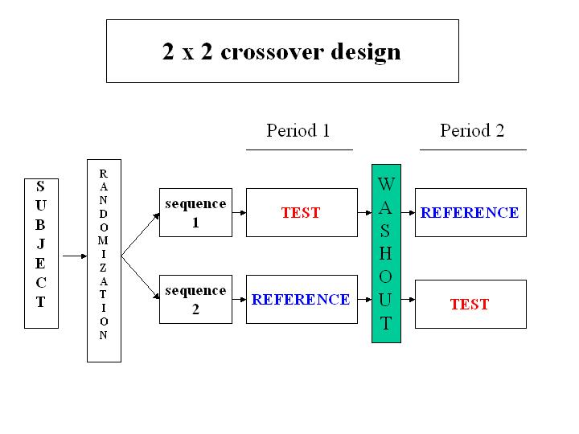
가장 단순한 대응비교로서 각 개체애 대하여 두 개의 처리에 대한 쌍표본 \((x_i,y_i)\)를 관측한다고 가정하자. 이에 대한 분포 모형은 다음과 같다.
\[ d_i = x_i -y_i \sim_{iid} N(\delta,\sigma^2) \text { where } \delta = \mu_1-\mu_2 = E(x)-E(y) \]
대응비교에서 사용되는 t-통계량은 다음과 같다.
\[ t = \frac{ \bar d} {s_d / \sqrt{n}} =\frac{ \bar x -\bar y} {s_d / \sqrt{n}} \tag{10.4}\]
여기서 \(s^2_d\)는 \(d_1,d_2,\dots ,d_n\)의 표본분산이다.
\[ s^2_d = \frac{\sum_{i=1}^n (d_i -\bar d)^2}{n-1} \]
위에서 알아본 독립표본에 의한 비교와 쌍표본에 의한 비교가 다른 점은 무었일까 생각해 보자. 표본의 비교가 다른 개체에서 추출된 독립인 관측치를 이용하는지 또는 같은 개체에서 추출된 대응하는(독립이 아닌) 관측치를 이용하는지에 따라서 서로 다른 t-통계량을 사용한다. 식 식 10.3 과 식 식 10.4 에 나타난 t-통계량을 비교하면 분자에 나타난 통계량은 효과의 차이를 나타내는 두 개의 평균의 차이로서 기본적으로 동일하다\((\bar d =\bar x -\bar y)\). 하지만 분모에서는 분자에 나타난 통계량의 표본오차(standard error)를 나타내는 양으로서 서로 다르다. 독립표본에서는 표본의 평균이 서로 독립이므로 다음과 같이 평균의 차이에 대한 분산이 각각의 분산의 합과 같으므로 이에 대한 추정량으로서 합동분산추정량을 이용하였다.
\[
Var(\bar x - \bar y) = Var(\bar x) + Var(\bar y)
\tag{10.5}\]
쌍표본에서는 위의 식 식 10.5 을 적용할 수 없다. 왜냐하면 두개의 표본 평균이 서로 독립이 아닐 가능성이 매우 높기 때문이다. 같은 개체에서 나온 관측치는 어떠한 형태로든 서로 관계가 있을 가능성이 높기 때문에 독립을 함부로 가정할 수 없다. 예를 들어 생물학적동등성 실험에서는 약 효과의 차이보다 약이 몸에 흡수되는 개인적인 체질이 관측값에 더 큰 영향을 줄 수 있다.
확률변수 \(x\)와 \(y\)가 독립이 아닌 경우 두 모형균의 차이를 비교하기 위하여 비교에 사용된 통계양은 두 확률변수의 차이다. \[ d_i = x_i - y_i \] 여기서 두 개의 확률변수의 차이를 이용할 때 암시적인 가정은 두 개의 확률변수의 차이를 내면 두 변수에 공통적으로 포함된 개인의 특성이 서로 상쇄되어 처리의 차이만이 확률변수 \(d_i\)에 존재한다는 것이다. 지금 설명한 대응비교 모형의 합리적인 가정을 요약하면 다음과 같다.
- 개인의 특성을 반영하는 공통 요인이 두 변수에 모두 영향을 미친다.
- 따라서 두 관측값 \((x_i,y_i)\)가 독립이 아니다
- 두 관측값의 차이를 내면 공통요인이 서로 상쇄되어 처리효과만 남는다.
\[ E(d_i) = \mu_1 - \mu_2 \]
위의 가정을 구현할 수 있는 대응비교 모형을 다음과 같은 가법모형(additive models)로 표현할 수 있다.
\[ x_i = \mu_1 + a_i + e_{i1}, \quad y_i = \mu_2 + a_i + e_{i2} \tag{10.6}\]
여기서 \(a_i\)는 두 확률변수 \((x_i,y_i)\)에 공통으로 포함된 개인적인 특성을 나타내는 요인이며 위의 식 식 10.6 는 식 식 10.1 에 공통요인 \(a_i\)가 추가된 형태이다.
두 확률변수 \((x_i,y_i)\)가 종속이기 위해서는 다음과 같은 가정을 이용할 수 있다.
\[ a_i \sim N(0, \sigma^2_a), \quad e_{i1} \sim_{iid} N(0, \sigma^2_e) \quad e_{i2} \sim_{iid} N(0, \sigma^2_e) \]
여기서 \(a_i\)가 평균이 0이고 분산이 \(\sigma_a^2\) 인 확률변수이다. 이러한 요인을 임의효과(random effect)라고 하며 모수(parameter)인 평균 \(\mu_i\)은 고정효과(fixed effect)라고 부른다. \(e_{i1}\)와 \(e_{i2}\)들은 모두 독립이며 평균이 \(0\) 이고 분산이 \(\sigma^2_e\)인 정규분포를 따르는 오차들이다. 또한 \(a_i\)와 (\(e_{i1}\),\(e_{i2}\))도 독립이다.
위와 같은 가정에서 두 변수의 차이를 내면 공통요인인 \(a_i\)가 제거되어 두 처리의 차이만이 남게되며 \(x_i\)와 \(y_i\)는 분포의 가정상 독립이 아니다.
\[ \begin{aligned} d_i & = x_i -y_i \\ & = \mu_1+ a_i + e_{i1} -(\mu_2+ a_i + e_{i2}) \\ & = \mu_1 -\mu_2 +(e_{i1}-e_{i2}) \\ & = \mu_1 -\mu_2 +e^*_i \\ Cov(x_i,y_i) & = Cov(\mu_1+ a_i + e_{i1},\mu_2+ a_i + e_{i2}) \\ & = Cov(a_i, a_i) \\ & = Var(a_i) \\ & = \sigma^2_a \end{aligned} \]
다음 절에서는 여기서 논의한 독립표본과 쌍표본의 개념 및 추정법을 일반적인 선형모형으로 확장하여 체계적인 비교를 해볼것이다.
10.2 일원배치 모형
10.2.1 고정효과 모형
먼저 일원배치 요인계획(one-way factor design)이용한 실험을 생각해 보자. 고려하는 요인의 수준의 개수를 \(I\)라고 하면 \(I\)개의 수준 중에 하나를 임의로 선택하여 실험대상에 적용하는 임의화 방법으로 각 수준마다 \(J\)의 관측값을 얻어다고 하자. 다음과 같은 ANOVA모형을 고려하여 분석을 할 수 있다.
\[ y_{ij} = \mu + \alpha_i + e_{ij}, \quad i=1,2,\dots,I \text{ and } j=1,2,\dots, J \tag{10.7}\]
여기서 \(e_{ij}\)는 서로 독립이며 \(N(0,\sigma_e^2)\)를 따르는 오차항이다.
ANOVA 모형 식 10.7 에서 \(\mu\)와 \(\alpha_i\)는 고정효과(fixed effect)라고 부르며 추정해야 할 모수(parameter)이다. 세심하게 설계된 실험에서는 수준에 대한 효과 \(\alpha_i\)의 값이 변하지 않게 통제할 수 있는 실험 환경이 가능하다고 생각할 수 있으므로 \(\alpha_i\)의 값을 변하지 않는 고정효과로 보는 것이 합리적이다.
일원배치 요인계획을 이용한 실험에서는 주요 관심사가 수준간의 차이가 있는지에 대한 것이며 이는 제곱합을 이용한 ANOVA table에서 F-test를 이용하여 검정할 수 있다.
\[ H_0: \alpha_1 = \alpha_2 =\dots = \alpha_I \]
10.2.2 혼합효과 모형
이제 다음과 같은 자료의 추출을 생각해 보자. 서울시 A구에 초등학교가 20개있다고 하자. 20개의 학교중 6개의 학교를을 임의로 추출하고 추출된 학교에 속한 모든 6학년 학생들에게 과학시험을 보게하여 점수를 얻었다. 이러한 자료에서 학생들의 성적은 모두 같지 않을 것이 당연하며 가장 점수가 낮은 학생부터 높은 학생까지 점수의 변동(variation)이 존재한다. 변동의 요인은 무었일까? 학생의 개인의 차이(예:학생의 지능, 노력 정도, 학습 환경)도 변동의 요인이지만 또한 학교의 차이도 변동의 요인이 될 수 있다.
여기서 학교에 대한 요인은 앞 절에서 본 실험 자료에서 나타나는 고정 효과에 의한 요인과는 성격이 틀리다. 20개의 학교라는 모집단에서 6개의 학교가 추출되었으며 이 때 학교의 차이는 설계된 실험에서는 수준에 대한 효과와는 다르게 표본 추출 때문에 생기는 변동이라고 할 수 있다. 또한 같은 학교에 다니는 학생들은 같은 지역과 교사 등 공통적인 요인에 의하여 영향을 받는다고 가정할 수 있다. 따라서 같은 학교에 다는 학생들의 성적이 독립이 아닐 수도 있다.
이러한 효과를 임의효과(random effect)라고 부르며 학생들의 과학점수에 대한 모형을 다음과 같은 혼합효과모형(mixed effects model)으로 설명할 수 있다.
\[ y_{ij} = \mu + a_i + e_{ij}, \quad i=1,2,\dots,I \text{ and } j=1,2,\dots, J \tag{10.8}\]
여기서 \(a_i\)는 학교의 효과를 나타내는 임의효과이며 서로 독립이고 \(N(0,\sigma_a^2)\)를 따른다. 또한 개인에 대한 효과 또는 오차항 \(e_{ij}\)는 서로 독립이며 \(N(0,\sigma_e^2)\)를 따른다. 임의효과 \(a_i\)와 오차항 \(e_{ij}\)는 서로 독립이다. 고정효과 \(\mu\)는 전체 평균을 나타내는 모수이다. 학교를 추출할 때 그 효과를 분산이 \(\sigma^2_a\)를 가지는 정규모집단에서 추출한다고 가정하는 것이다. 학교를 하나의 군집(cluster)로 생각하고 학교의 효과를 군집효과로 보고 총변동을 설명하고 나머지 변동은 오차의 변동으로 개인의 효과 등으로 설명한다.
\[ Var(y_{ij}) =Var(\mu + a_i + e_{ij}) = Var(a_i) + Var(e_{ij}) = \sigma^2_a + \sigma^2_e \]
식 식 10.8 로 표현된 임의효과를 포함한 혼합모형(일원배치 임의효과 모형; one-way random effect models)의 가장 큰 특징 중에 하나는 같은 군집에 속하는 관측치들은 서로 독립이 아니며 양의 상관관계가 있다. 위의 예제에서 두 학생 \(j\)와 \(k\)가 같은 학교 \(i\)에 속한다면
\[ Cov(y_{ij},y_{ik}) = Cov( \mu + a_i + e_{ij}, \mu + a_i + e_{ik}) =Cov (a_i, a_i)=\sigma^2_a \] 따라서
\[ corr(y_{ij},y_{ik})= \frac{ Cov(y_{ij},y_{ik})}{\sqrt{Var(y_{ij})Var(y_{ik})} } = \frac{\sigma^2_a }{\sigma^2_a + \sigma^2_e } \]
위의 상관계수를 보면 학교간의 변동의 크기를 나타내는 \(\sigma^2_a\)각 개인간의 변동을 나타내는 \(\sigma^2_e\)보다 상대적으로 클수록 상관계수가 1에 가까와진다. 보통 \(\sigma^2_a\)을 집단간 변동(between-group variance)라 하고 \(\sigma^2_e\)를 집단내 변동(within-group variance)라고 한다. 따라서 \(\sigma^2_a\)와 \(\sigma^2_e\)의 상대적인 크기의 차이에 따라 군집내 관측값의 상관관계가 달라진다.
식 식 10.8 의 임의효과 모형은 임의효과가 2개 이상인 모형으로 학장될 수 있다. 예제에서 학교를 추출하고 학교내에서 학급을 추출하여 추출된 학급내의 학생들이 시험을 보면 다음과 같은 모형을 적용할 수 있다.
\[ y_{ijk} = \mu + a_i + b_{ij} + e_{ijk} \]
위의 모형에서 \(a_i\)는 \(N(0,\sigma^2_a)\)를 따르는 학교에 대한 임의효과, \(b_{ij}\)는 \(N(0,\sigma^2_b)\)를 따르는 학급에 대한 임의효과, \(e_{ijk}\)는 \(N(0,\sigma^2_e)\)를 따르는 학생에 대한 임의효과 또는 오차항으로 생각할 수 있다.
임의효과 모형에 고정효과가 같이 포함되어 있는 모형을 혼합모형(mixed model)이라고 부르며 반응변수의 변동에 영향을 미치는 요인들 또는 예측변수 중에서 임의효과와 고정효과를 구별하여 정하고 동시에 모형에 포함시킬수 있다. 예를 들어서 학교를 선택하여 과학시험을 볼 경우에 학기가 시작할 떄 과학교수법 두가지 중 하나를 임의화해서 각 학교에 배정하여 배정된 교수법으로 학생을 가르친 후에 시험을 보았다면 교수법에 대한 효과는 고정효과로 볼 수 있다. 따라서 다음과 같은 모형을 고려할 수 있다.
\[ y_{ij} = \mu + \tau_{k(i)} + a_i + e_{ij} \tag{10.9}\]
여기서 \(\tau_{k(i)}\)는 \(i\)번째 학교의 교수법에 대한 고정효과이다(교수법이 배정된 결과에 의하여 \(k(i)=1\) 또는 \(k(i)=2\)이 된다). 이 교수법에 대한 고정효과에 대해서는 두 교수법이 차이가 있는 지에 대한 검정이 주요한 관심사일 것이다 (\(H_0: \tau_1=\tau_2\))
고정효과와 임의효과의 표기
고정효과는 보통 모형식에서 그릭 문자(\(\alpha\), \(\beta\))로 표시하고 임의효과는 모형식에서 영어 알파벳 문자(\(a\), \(b\))로 표시한다
10.3 반복측정자료
반복측정자료(longitudinal data, repeated measurements)는 관측단위안에서 여러 개의 관측값을 측정한 자료의 형식을 말한다. 예를 들어 환자가 병원을 여러 번 방문하고 방문시마다 혈압을 측정하였다면 한 명의 환자에서 반복 측정한 자료는 서로 독립이 아니다. 또한 가구조사(household survey)에서 가구원의 취업 여부, 건겅 상태등을 여러 해동안 매년 측정하는 경우 이러한 자료를 패널자료(panel data) 또는 longitudinal 자료라고 한다. 이렇게 하나의 관측단위 안에서 측정한 자료들은 서로 독립이 아닌 특징이 있고 자료를 분석하는 경우 이러한 자료들의 종속구조를 고려하는 모형을 사용하는 것이 적절하다. 이렇게 반복측정자료에서 반복자료들의 공분산구조를 설정하는 통계적 방법들은 다양하지만 대표적으로 쉽게 사용할 수 있는 방법이 임의효과를 포함한 혼합모형을 사용하는 방법이다.
보기 10.1 (트럭운전사의 수면시간) lme4 패키지에 자료인 spleepstudy는 화물트럭 운전사들에 대한 수면부족 현상에 대하여 연구한 자료이다. 18명의 운전자들이 매일 3시간의 수면(부족한 수면)을 하면서 매일 일정한 동작의 반응시간을 10일동안 반복적으로 측정한 자료가 있다. 한명의 운전사에게 10일 동안의 반응에 대한 측정자료 10개가 존재하므로 이는 반복측정 자료이며 이러한 10개의 자료는 독립이 아니다. 일단 자료의 구조를 살펴보자. 반응변수 `Reaction은 반응시간(ms)를 나타내며 설명변수로서 Days는 날짜(\(t=0,1,2,\dots,9\)), Subject 는 운전자의 고유번호를 나타낸다.
library(lme4)
library(lmerTest)
str(sleepstudy)'data.frame': 180 obs. of 3 variables:
$ Reaction: num 250 259 251 321 357 ...
$ Days : num 0 1 2 3 4 5 6 7 8 9 ...
$ Subject : Factor w/ 18 levels "308","309","310",..: 1 1 1 1 1 1 1 1 1 1 ...head(sleepstudy, n = 20) Reaction Days Subject
1 249.5600 0 308
2 258.7047 1 308
3 250.8006 2 308
4 321.4398 3 308
5 356.8519 4 308
6 414.6901 5 308
7 382.2038 6 308
8 290.1486 7 308
9 430.5853 8 308
10 466.3535 9 308
11 222.7339 0 309
12 205.2658 1 309
13 202.9778 2 309
14 204.7070 3 309
15 207.7161 4 309
16 215.9618 5 309
17 213.6303 6 309
18 217.7272 7 309
19 224.2957 8 309
20 237.3142 9 309각 운전자에 대한 10일 간의 반응속도가 시간에 따라 어떻게 변하는 가를 알아보자. 전반적으로 시간이 지나면서 운전자들의 반응시간이 증가하고 있음을 알 수 있다. 또한 개인 별로 반응 시간의 변화와 패턴이 다르다는 것을 알 수 있다.
library(ggplot2)
ggplot(sleepstudy, aes(x = Days, y = Reaction)) +
geom_point(size = 0.5) +
geom_smooth(method = lm, se = FALSE, linewidth = 0.5) +
facet_wrap("Subject", labeller = label_both) +
theme_bw()`geom_smooth()` using formula = 'y ~ x'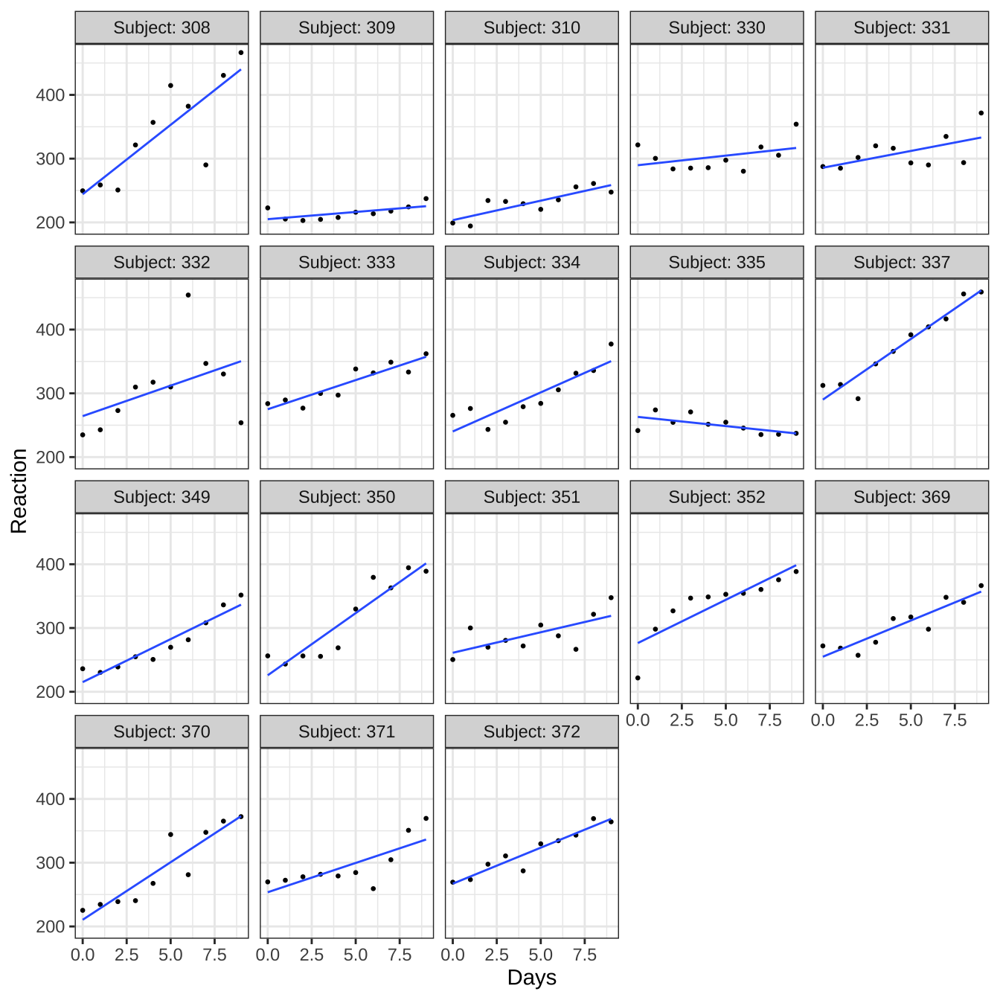
10.3.1 개체들의 선형 회귀모형
각 운전자 \(i\) 에 대하여 10일간 측정한 반응속도 \(y_{ij}\)를 시간에 대하여 선형모형으로 적합하면 개인별 회귀직선을 다음과 같이 표시할 수 있다.
\[ y_{ij} = \beta_{0i} + \beta_{1i} t_j + e_{ij},\quad i=1,2,\dots,18,\quad j=1,2,\dots,10 \tag{10.10}\]
여기서 오차항 \(e_{ij}\)은 서로 독립이며 \(N(0, \sigma^2_e)\)를 따른다고 가정한다.
행렬식으로는 다음과 같이 나타낼 수 있다.
\[ \pmb y_i =\pmb X_i \pmb \beta_{i} +\pmb e_i \]
여기서 \[ \pmb y_i=\begin{bmatrix} y_{i1} \\ y_{i2} \\ \vdots \\ y_{i,10} \end{bmatrix},~ \pmb X_i = \begin{bmatrix} 1 & 0 \\ 1 & 1 \\ \vdots & \vdots \\ 1 & 9 \end{bmatrix}, \pmb \beta_i= \begin{bmatrix} \beta_{0i} \\ \beta_{1i} \\ \end{bmatrix}, \pmb e_i= \begin{bmatrix} e_{i1} \\ e_{i2} \\ \vdots \\ e_{i,10} \end{bmatrix} \]
위의 식에서 \(\beta_{0i}\)와 \(\beta_{1i}\)는 \(i\)번째 운전사의 반응속도를 설명내는 회귀직선의 절편과 기울기이다. 절편 \(\beta_{0i}\)는 실험 시작때 반응속도를 의미하고 기울기 \(\beta_{1i}\)는 실험이 진행되는 동안 반응속도가 어떻게 변하는 지 변화의 방향과 크기를 보여준다. 함수 를 아래와 같이 이용하면 식 식 10.10 을 각 운전사마다 적합시켜 각각의 절편과 기울기를 구할 수 있다.
lmf1 <- lmList(Reaction ~ Days | Subject, sleepstudy)
lmf1Call: lmList(formula = Reaction ~ Days | Subject, data = sleepstudy)
Coefficients:
(Intercept) Days
308 244.1927 21.764702
309 205.0549 2.261785
310 203.4842 6.114899
330 289.6851 3.008073
331 285.7390 5.266019
332 264.2516 9.566768
333 275.0191 9.142045
334 240.1629 12.253141
335 263.0347 -2.881034
337 290.1041 19.025974
349 215.1118 13.493933
350 225.8346 19.504017
351 261.1470 6.433498
352 276.3721 13.566549
369 254.9681 11.348109
370 210.4491 18.056151
371 253.6360 9.188445
372 267.0448 11.298073
Degrees of freedom: 180 total; 144 residual
Residual standard error: 25.59182cor(coef(lmf1)) (Intercept) Days
(Intercept) 1.0000000 -0.1375534
Days -0.1375534 1.0000000plot(coef(lmf1), main = "intercepts and slopes on drivers: sleep study ")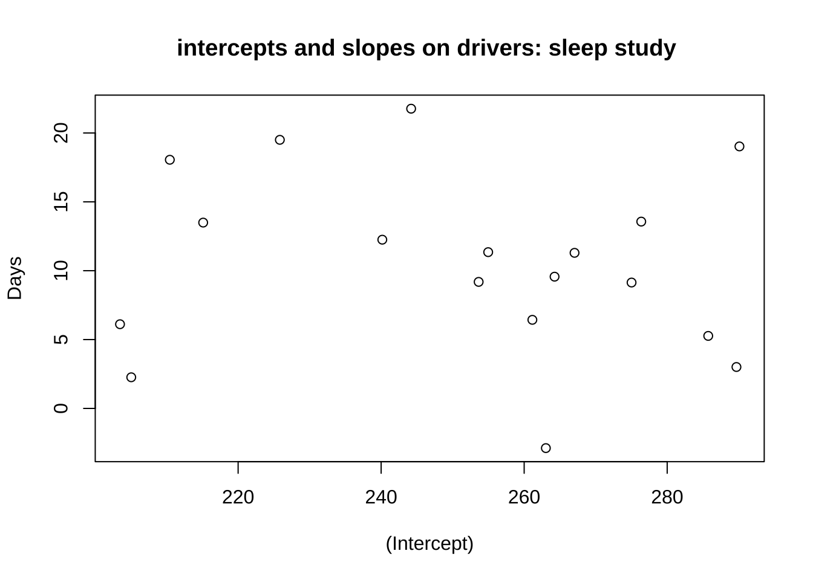
18개의 절편과 기울기는 큰 상관관계는 없는것으로 보이지만 약한 음의 상관계수가 나타났다.
절편과 기울기에 대한 분포를 보기 위하여 상자그림을 그려보면 평균을 중심으로 대칭인 분포를 보이고 있다.
boxplot(coef(lmf1)[1])
boxplot(coef(lmf1)[2])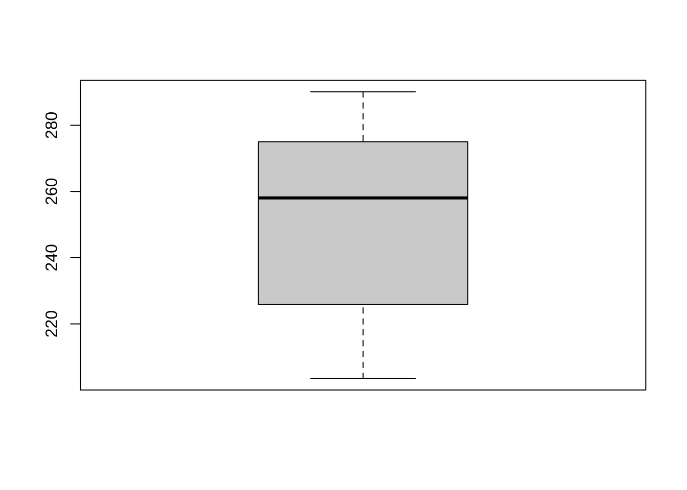
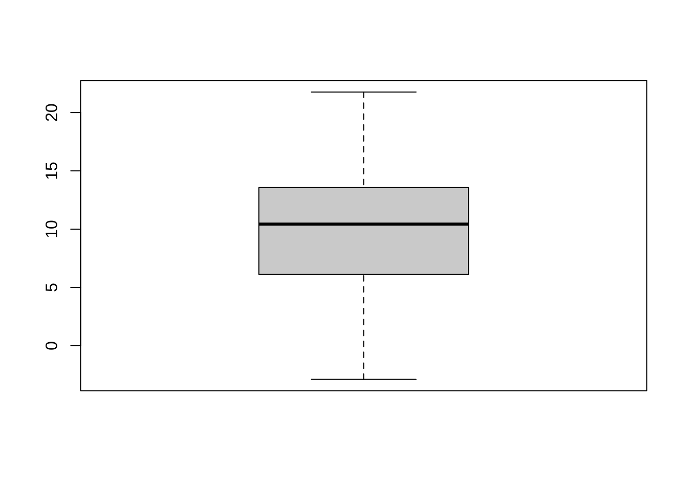
이제 각 운전사에 대하여 회귀식을 따로 적합하지 않고 전체 운전사들의 자료를 모두 합쳐서 하나의 회귀식을 고려할 수 있다. 개체의 특성을 반영하는 모형이 아닌 전체 집단에 대한 평균적인 모형(population model)을 고려하는 것이다.
\[ y_{ij} = \beta_0 + \beta_1 t_j + e_{ij} ,\quad i=1,2\dots,18, j=1,2, \dots, 10 \tag{10.11}\]
여기서 오차항은 서로 독립이며 \(N(0, \sigma^2_e)\)를 따른다고 가정한다.
위와 같은 전체 운전사 집단의 관측값을 운전자의 특성을 고려하지 않고 세운 모형으로서 시간에 따른 반응시간에 대한 모집단의 전체적인 평균적 함수 관계를 파악하는 모형이라고 할 수 있다.
lmpop <- lm(Reaction ~ Days, sleepstudy)
summary(lmpop)
Call:
lm(formula = Reaction ~ Days, data = sleepstudy)
Residuals:
Min 1Q Median 3Q Max
-110.848 -27.483 1.546 26.142 139.953
Coefficients:
Estimate Std. Error t value Pr(>|t|)
(Intercept) 251.405 6.610 38.033 < 2e-16 ***
Days 10.467 1.238 8.454 9.89e-15 ***
---
Signif. codes: 0 '***' 0.001 '**' 0.01 '*' 0.05 '.' 0.1 ' ' 1
Residual standard error: 47.71 on 178 degrees of freedom
Multiple R-squared: 0.2865, Adjusted R-squared: 0.2825
F-statistic: 71.46 on 1 and 178 DF, p-value: 9.894e-15with(sleepstudy, plot(Days, Reaction, main = "Population and individual regression lines"))
abline(a = coef(lmpop)[1], b = coef(lmpop)[2], lwd = 3)
for (i in 1:18) {
xx <- as.numeric(coef(lmf1)[i, ])
abline(a = xx[1], b = xx[2], lty = 2)
}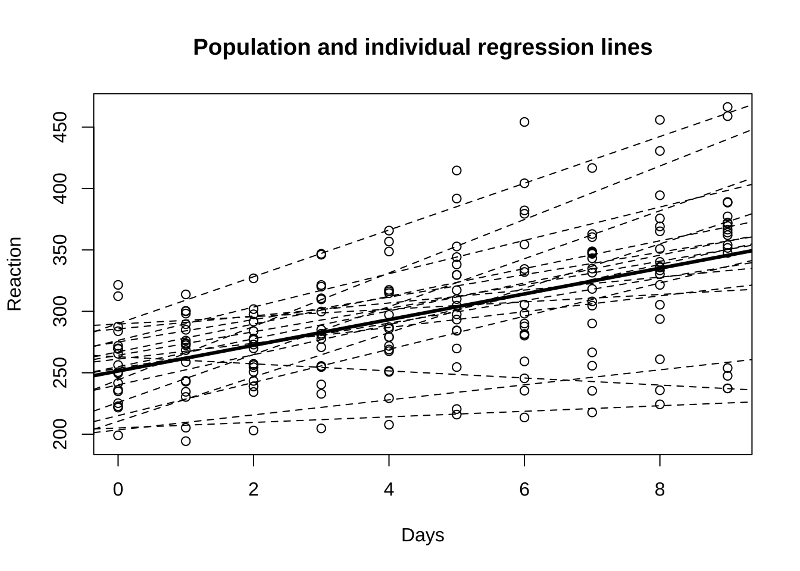
이제 각 운전사에 대하여 개체별로 적합한 회귀식의 계수들\((\hat \beta_{0i}, \hat \beta_{1i})\) 와 전체집단에 적한한 회귀식의 계수 \((\hat \beta_{0}, \hat \beta_{1})\)의 관계를 보면 개체별로 회귀 계수들의 평균이 전체에 적용한 모형의 계수와 매우 가까운 사실을 알 수 있다.
apply(coef(lmf1), 2, mean)(Intercept) Days
251.40510 10.46729 coef(lmpop)(Intercept) Days
251.40510 10.46729 10.3.2 임의계수 모형
앞 절의 모형과 분석에서 알 수 있듯이 한 개체에 대하여 여러 개의 관측값을 측정한 자료에 회귀방정식을 각각 적합시켜보고 또한 개체의 특성을 고려하지않은 전체 모형을 적합해보면 다음과 같은 두 가지 결과를 볼 수 있다.
- 각 개체별 회귀식은 개인의 특성을 반영한다. 즉, 개체에 따라 시간에 따른 반응시간의 변화가 다르게 나타난다.
- 하지만 개인별로 볼 때도 전체적으로는 시간에 따라서 반응시간이 증가하는 경향이 있음을 알 수 있다.
- 전체 자료에 적합한 모형을 보면 개인별로 적합한 모형의 공통적인 성격, 즉 시간에 따른 반응시간의 증가를 알 수 있다.
- 이러한 결과를 보고 각 개인의 변화는 전체적인 변화를 따르면서 각 개인의 특성이 반영되었다고 가정할 수 있다.
위에서 논의하였듯이 전체적인 경향과 개인의 특성을 동시에 고려할 수 있는 모형이 생각할 수 있고 이러한 모형이 다음과 같은 모형이다.
\[ y_{ij} = (\beta_0 + b_{0i}) + (\beta_1 + b_{1i}) t_j + e_{ij} , \quad i=1,2,\dots,18,\quad j=1,2,\dots,10 \tag{10.12}\]
모형 식 10.12 는 절편과 기울기가 두 개의 구성 요소로 더해져서 표현된다.기울기는 \(\beta_1+b_{1i}\)로서 나타내어지며 \(\beta_1\)은 모집단이 가지는 공통적인 경향을 반영하는 모수이고 \(b_{1i}\)는 \(i\) 번째 개체의 특성을 반영한 확률변수이다. 절편도 유사한 형식으로 구성된다.
각 개인에 대한 특성을 나타내는 변수 \((b_{0i}, b_{1i})\) 을 확률변수로 설정하고 이를 모수(\(\beta_0, \beta_1)\) (parameter or fixed effect)와 구별하여 임의효과(random effect)라고 한다.
임의효과는 모집단을 구성하는 개인이 표본에 추출되었다고 생각하며 확률분포를 따른다고 가정한다. 반복측정자료에서 인의효과를 공통으로 가지고 있는 관측치는 독립이 아니게 돼며 따라서 같은 개체에서 나온 관측값은 독립이 아니다.
모형 식 10.12 처럼 각 개인의 임의 효과가 포함된 선형모형을 임의계수모형(random coefficient model) 이라고 한다. 이러한 모형은 반복측정자료에서 개인의 특성을 고려하여 모형을 설정하는데 유용하다.
18명에 대한 회귀직선의 절편과 기울기를 보면 개인의 차이에 따른 변동을 볼 수 있으며 이러한 각 개인간의 변동을 임의효과 를 이용하여 다음과 같은 모형을 생각해보자.
\[ \pmb \beta_i= \begin{bmatrix} \beta_{0} \\ \beta_{1} \\ \end{bmatrix} +\begin{bmatrix} b_{0i} \\ b_{1i} \\ \end{bmatrix} , \quad \pmb b_i = \begin{bmatrix} b_{0i} \\ b_{1i} \\ \end{bmatrix} \sim N \left ( \begin{bmatrix} 0 \\ 0 \\ \end{bmatrix} , \begin{bmatrix} \sigma^2_{b1} & \rho \sigma_{b1} \sigma_{b2}\\ \rho \sigma_{b1} \sigma_{b2} & \sigma^2_{b2} \\ \end{bmatrix} \right ) \]
위의 모형은 각 개인의 회귀직선에서 각 절편과 기울기가 전체평균 \(\beta_0\)와 \(\beta_1\)를 따르며 각 개인의 차이는 전체평균에 임의효과인 \(b_{0i}\)와 \(b_{1i}\)가 더해져서 나타난다는 것을 의미한다. 이변량 임의효과 \(b_{0i}\)와 \(b_{1i}\)는 이변량 정규분포를 따르며 각각의 분산과 상관계수가 \(\sigma^2_{b1}\), \(\sigma^2_{b2}\), \(\rho\)이다.
다른 개체에 대한 임의효과는 서로 독립이며 임의 효과와 오차항은 독립이다. 여기서 오차항은 서로 독립이며 \(N(0, \sigma^2_e)\)를 따른다고 가정한다.
\[ Cov(\pmb b_{i}, \pmb b_{j}) =\pmb 0 \text{ when } i \ne j,\quad Cov(\pmb b_{i}, e_{jk}) =\pmb 0 \text{ for all } i,j,k \]
위 식 10.12 같은 혼합효과모형(mixed effects model)을 각 개인 \(i\)에 대하여 행렬식으로 표시하면 다음과 같다. 아래 모형식은 일반적으로 독립군집 모형에서 하나의 군집에 대한 반복된 관측값들에 대한 모형이며 독립군집 모형의 일반적인 이론은 다음 절에서 더 논의할 것이다.
\[ \pmb y_i = \pmb X_i \pmb \beta + \pmb Z_i \pmb b_i + \pmb e_i , \quad i=1,2,\dots,18 \]
여기서
\[ \pmb y_i=\begin{bmatrix} y_{i1} \\ y_{i2} \\ \vdots \\ y_{i,10} \end{bmatrix},~\pmb X_i = \begin{bmatrix} 1 & 0 \\ 1 & 1 \\ \vdots & \vdots \\ 1 & 9 \end{bmatrix}, \pmb \beta= \begin{bmatrix} \beta_{0} \\ \beta_{1} \\ \end{bmatrix}, ~\pmb Z_i = \begin{bmatrix} 1 & 0 \\ 1 & 1 \\ \vdots & \vdots \\ 1 & 9 \end{bmatrix},~ \pmb b_i = \begin{bmatrix} b_{0i} \\ b_{1i} \\ \end{bmatrix},~ \pmb e_i= \begin{bmatrix} e_{i1} \\ e_{i2} \\ \vdots \\ e_{i,10} \end{bmatrix} \]
위의 각 개인에 대한 모형을 모두 합쳐서 하나의 혼합효과모형으로 나타내면 다음과 같이 표현할 수 있다.
\[ \pmb y = \pmb X \pmb \beta + \pmb Z \pmb b + \pmb e \tag{10.13}\]
여기서 반응변수벡터 \(\pmb y\)와 고정효과 \(\pmb \beta\)에 대한 계획행렬 \(X\)는 각 개인의 반응변수벡터 \(\pmb y_i\)와 \(\pmb X_i\)를 행으로 쌓아놓은 것으로 표현된다. 오차항에 대한 벡터 \(\pmb e\)도 동일한 형식의 벡터이다.
\[ \pmb y=\begin{bmatrix} \pmb y_{1} \\ \pmb y_{2} \\ \vdots \\ \pmb y_{18} \end{bmatrix},~\pmb X = \begin{bmatrix} \pmb X_1 \\ \pmb X_2 \\ \vdots \\ \pmb X_{18} \end{bmatrix} ~ \pmb e = \begin{bmatrix} \pmb e_1 \\ \pmb e_2 \\ \vdots \\ \pmb e_{18} \end{bmatrix} \]
임의효과 벡터 \({\pmb b}\) 는 각 개인에 대한 임의효과벡터 \(\pmb b_i\) 를 행으로 쌓아놓은것과 같고 임의효과에 대한 계획행렬 \(\pmb Z\) 는 각 개인의 계획행렬 \(\pmb Z_i\) 를 대각원소로 구성하는 행렬이다.
\[ \pmb b=\begin{bmatrix} \pmb b_{1} \\ \pmb b_{2} \\ \vdots \\ \pmb b_{18} \end{bmatrix},~\pmb Z = \begin{bmatrix} \pmb Z_1 & 0 & \dots & 0 \\ 0 & \pmb Z_2 & \dots & 0 \\ \vdots & \vdots & \vdots & \vdots \\ 0 & 0 & \dots & \pmb Z_{18} \end{bmatrix} \]
혼합모형 식 10.13 를 lmer() 함수를 이용하여 적합시켜보자. 모형에서 (1 + Days|Subject) 이 개체에 대하여 절편과 기울기에 대한 임의효과를 지정한다.
fm1 <- lmer(Reaction ~ 1 + Days + (1 + Days|Subject), sleepstudy)
summary(fm1)Linear mixed model fit by REML. t-tests use Satterthwaite's method [
lmerModLmerTest]
Formula: Reaction ~ 1 + Days + (1 + Days | Subject)
Data: sleepstudy
REML criterion at convergence: 1743.6
Scaled residuals:
Min 1Q Median 3Q Max
-3.9536 -0.4634 0.0231 0.4634 5.1793
Random effects:
Groups Name Variance Std.Dev. Corr
Subject (Intercept) 612.10 24.741
Days 35.07 5.922 0.07
Residual 654.94 25.592
Number of obs: 180, groups: Subject, 18
Fixed effects:
Estimate Std. Error df t value Pr(>|t|)
(Intercept) 251.405 6.825 17.000 36.838 < 2e-16 ***
Days 10.467 1.546 17.000 6.771 3.26e-06 ***
---
Signif. codes: 0 '***' 0.001 '**' 0.01 '*' 0.05 '.' 0.1 ' ' 1
Correlation of Fixed Effects:
(Intr)
Days -0.138위의 혼합모형 적합결과를 살펴보자. 첫째로 고정효과에 대한 추정식은 다음과 같다
fixef(fm1)(Intercept) Days
251.40510 10.46729 또한 오차항에 대한 분산 및 임의효과의 분산성분과 상관계수는 다음과 같이 나타난다.
VarCorr(fm1) Groups Name Std.Dev. Corr
Subject (Intercept) 24.7407
Days 5.9221 0.066
Residual 25.5918 위의 고정효과와 임의효과의 분산성분에 대한 추정치를 이용하여 모형의 적합의 결과를 다음과 같이 나타낼 수 있다.
\[ \text{Reaction Time} = N(251.405 + 10.467 \text{ Days}, 25.6^2) \]
\[ \begin{bmatrix} b_{0i} \\ b_{1i} \\ \end{bmatrix} \sim N \left ( \begin{bmatrix} 0 \\ 0 \\ \end{bmatrix} , \begin{bmatrix} 24.74^2 & (0.07)(24.74)(5.92)\\ (0.07)(24.74)(5.92)& 5.92^2 \\ \end{bmatrix} \right ) \]
이제 임의효과 \(\pmb b\)에 대한 예측(prediction)을 생각해보자. 우리는 오직 관측벡터 \(\pmb y\)만을 관측하고 임의효과 \(\pmb b\)는 관측을 할 수 없는 확률변수이다. 하지만 주어진 관측벡터와 추정된 분산으로 임의효과의 값을 예측할 수있으며 그 결과는 다음과 같다.
re <- ranef(fm1)$Subject
re (Intercept) Days
308 2.2585510 9.1989758
309 -40.3987381 -8.6196806
310 -38.9604090 -5.4488565
330 23.6906196 -4.8143503
331 22.2603126 -3.0699116
332 9.0395679 -0.2721770
333 16.8405086 -0.2236361
334 -7.2326151 1.0745816
335 -0.3336684 -10.7521652
337 34.8904868 8.6282652
349 -25.2102286 1.1734322
350 -13.0700342 6.6142178
351 4.5778642 -3.0152621
352 20.8636782 3.5360011
369 3.2754656 0.8722149
370 -25.6129993 4.8224850
371 0.8070461 -0.9881562
372 12.3145921 1.2840221plot(re, main ="prediction of random effects ")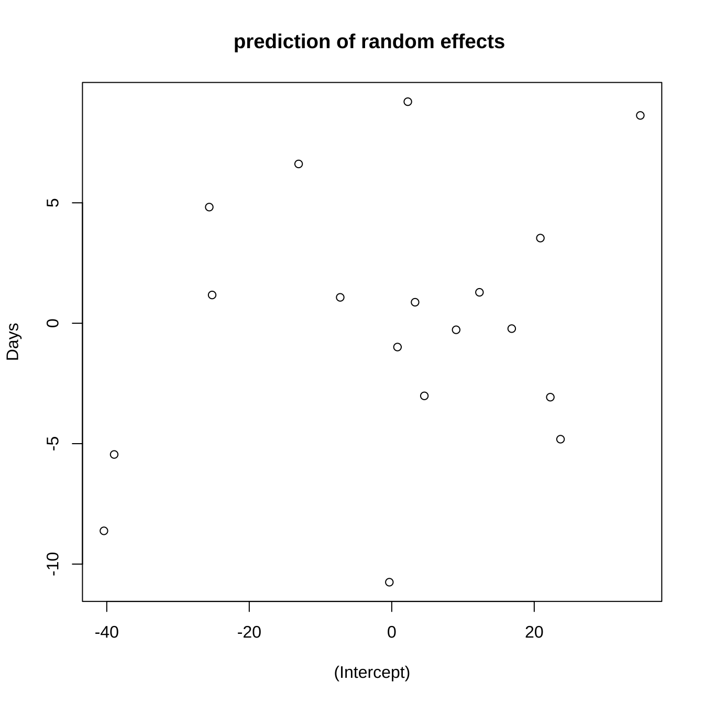
예측된 각 개인의 절편과 기울기에 대한 임의효과 \(b_{0i}\)과 \(b_{1i}\)에 고정효과의 추정량 \(\hat \beta\)를 더해주면 각 개인의 절편과 기울기에 대한 예측값을 구할 수 있다.
beta <- matrix(as.numeric(fixef(fm1)),18,2,byrow=T)
beta + re (Intercept) Days
308 253.6637 19.6662617
309 211.0064 1.8476053
310 212.4447 5.0184295
330 275.0957 5.6529356
331 273.6654 7.3973743
332 260.4447 10.1951090
333 268.2456 10.2436499
334 244.1725 11.5418676
335 251.0714 -0.2848792
337 286.2956 19.0955511
349 226.1949 11.6407181
350 238.3351 17.0815038
351 255.9830 7.4520239
352 272.2688 14.0032871
369 254.6806 11.3395008
370 225.7921 15.2897709
371 252.2122 9.4791297
372 263.7197 11.7513080위의 결과를 각 개체에 대해 별도의 회귀직선을 적합시켜서 얻은 18개의 절편과 기울기와 비교해보자.
coef(lmf1) (Intercept) Days
308 244.1927 21.764702
309 205.0549 2.261785
310 203.4842 6.114899
330 289.6851 3.008073
331 285.7390 5.266019
332 264.2516 9.566768
333 275.0191 9.142045
334 240.1629 12.253141
335 263.0347 -2.881034
337 290.1041 19.025974
349 215.1118 13.493933
350 225.8346 19.504017
351 261.1470 6.433498
352 276.3721 13.566549
369 254.9681 11.348109
370 210.4491 18.056151
371 253.6360 9.188445
372 267.0448 11.298073이렇게 혼합모형을 통해서 얻은 각 개인의 절편과 기울기에 대한 예측값과 각각의 개인에 대해서 회귀직선을 따로 적합하여 얻은 절편과 기울기의 관계를 그림으로 그려보면 다음과 같다. 즉 혼합모형을 통해서 얻은 각 개인의 절편과 기울기는 절편과 기울기의 전체평균값 방향으로 축소되는 경향(shrinkage)을 볼수있다.
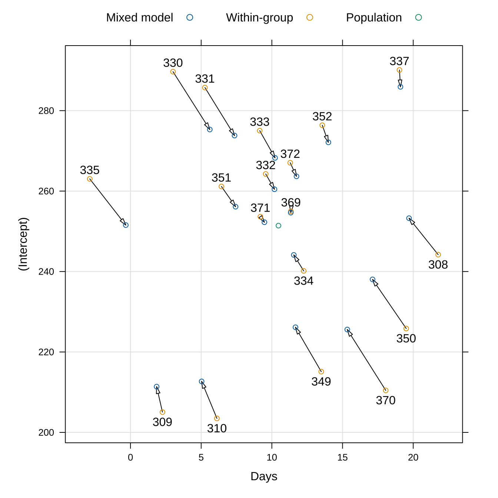
여기서 혼합모형의 식 식 10.13 의 임의효과에 대한 계획행렬 \(Z\)의 구조를 살펴보자. R 의 적합된 결과에서 getME 함수를 이용하여 계획행렬 \(\pmb Z\)의 전치행렬(transpose matrix, \(\pmb Z^t\))을 얻을 수 있다. 계획행렬 \(\pmb Z\)는 그 값의 많은 부분이 0으로 구성되어 있어서 성김행렬(saprse matrix)라고 부르며 이런 행렬은 특별한 형식으로 저장되어 있다.
image(getME(fm1,"Zt"))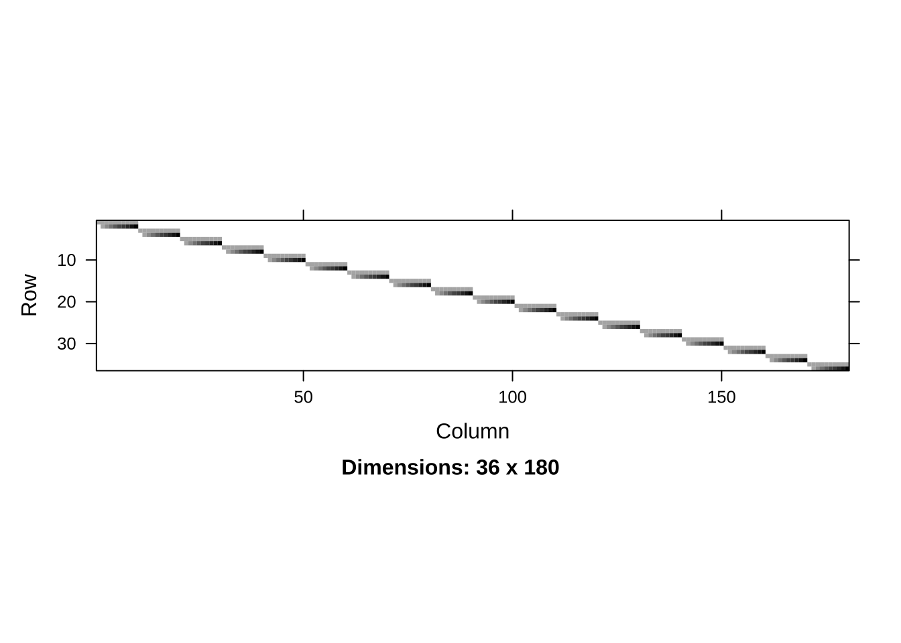
또한 혼합모형의 식 식 10.13 에서 임의효과의 상관계수가 \(\rho=0\)인 경우의 모형을 고려해 보자
\[ \begin{bmatrix} b_{0i} \\ b_{1i} \\ \end{bmatrix} \sim N \left ( \begin{bmatrix} 0 \\ 0 \\ \end{bmatrix} , \begin{bmatrix} \sigma^2_{b1} & 0\\ 0 & \sigma^2_{b2} \\ \end{bmatrix} \right ) \]
임의효과의 상관계수가 \(\rho=0\)인 모형은 아래와 같이 (1+Days | Subject) 를 사용하는 대신 두 개의 바 || 를 사용한 (1+Days || Subject)으로 적합시키면 결과를 다음과 같이 얻을 수 있다.
fm2 <- lmer(Reaction ~ 1 + Days + (1+Days||Subject), sleepstudy)
# 다음 명령어는 위의 명령어와 같은 모형을 적합한다.
# fm2 <- lmer(Reaction ~ 1 + Days + (1|Subject) + (0+Days|Subject), sleepstudy)
summary(fm2)Linear mixed model fit by REML. t-tests use Satterthwaite's method [
lmerModLmerTest]
Formula: Reaction ~ 1 + Days + (1 + Days || Subject)
Data: sleepstudy
REML criterion at convergence: 1743.7
Scaled residuals:
Min 1Q Median 3Q Max
-3.9626 -0.4625 0.0204 0.4653 5.1860
Random effects:
Groups Name Variance Std.Dev.
Subject (Intercept) 627.57 25.051
Subject.1 Days 35.86 5.988
Residual 653.58 25.565
Number of obs: 180, groups: Subject, 18
Fixed effects:
Estimate Std. Error df t value Pr(>|t|)
(Intercept) 251.405 6.885 18.156 36.513 < 2e-16 ***
Days 10.467 1.560 18.156 6.712 2.59e-06 ***
---
Signif. codes: 0 '***' 0.001 '**' 0.01 '*' 0.05 '.' 0.1 ' ' 1
Correlation of Fixed Effects:
(Intr)
Days -0.184위의 고정효과와 임의효과의 분산성분에 대한 추정치를 이용하여 모형의 적합의 결과를 다음과 같이 나타낼 수 있다.
\[ \text{Reaction Time} = N(251.405 + 10.467 \text{ Days}, 25.6^2) \]
\[ \begin{bmatrix} b_{0i} \\ b_{1i} \\ \end{bmatrix} \sim N \left ( \begin{bmatrix} 0 \\ 0 \\ \end{bmatrix} , \begin{bmatrix} 25.1^2 & 0\\ 0& 6.0^2 \\ \end{bmatrix} \right ) \]
두 모형, 즉 절편과 기울기에 대한 두 임의효과가 종속인지 또는 독립인지에 대한 두 모형을 AIC(Akaike Information Criteris)로 비교하해 보자. 두 모형은 AIC의 값은 거의 동일하지만 임의효과의 상관게수가 0인 모형이 AIC 값이 약간 작으며 상관게수의 추정치가 메우 작으므로 임의효과의 상관게수가 0인 모형을 선택하는 것이 합리적이라고 판단된다.
AIC(fm1)[1] 1755.628AIC(fm2)[1] 1753.66910.4 최대가능도 추정
10.4.1 선형회귀모형
반응변수가 \(y\) 이고 \(k\)개의 독립변수 \((x_1, x_2, \cdots, x_k)\)가 있다고 가정하고 표본의 크기 \(n\) 인 자료가 얻어지면 선형회귀식을 행렬로 다음과 같이 표현할 수 있다.
\[ \begin{aligned} y_i & = \beta_0 + \beta_1x_{i1} + \beta_2x_{i2} + \cdots + \beta_kx_{ik} + e_i \\ & = \pmb x^t_i \pmb \beta + e_i, \quad i=1,2,\cdots,n \end{aligned} \]
위와 같은 회귀모형을 선형중회귀모형이라 부르며. 위의 모형식을 벡터와 행렬을 이용하여 표시하면 다음과 같다.
\[ \pmb y = \pmb X \pmb \beta + \pmb e \tag{10.14}\]
여기서 회귀분석의 오차항의 가정을 살펴보면 오차항이 서로 독립이고 동일한 분산을 갖는다. 즉, 오차항은 다음의 분포를 따른다. 즉, \(\pmb e \sim (0,\sigma_e^2 \pmb I_n)\). 관측값 벡터 \(\pmb y\) 의 평균과 분산을 보면
\[ E(\pmb y|\pmb X) = \pmb X \pmb \beta, \quad Var(\pmb y|\pmb X) = \sigma_e^2 \pmb I_n \]
여기서 오차항이 정규분포를 따른다면 (\(\pmb e \sim N(0,\sigma_e^2 \pmb I_n)\)) 관측값 벡터 \(\pmb y\) 또한 정규분포를 따른다
\[ \pmb y \sim N(\pmb X \pmb \beta, \sigma_e^2 \pmb I_n) \]
위의 선형 모형 가정 하에서, 최소제곱 추정량 \(\hat {\pmb \beta}\) (least square estimator)는 다음과 같이 오차제곱합(Error Sum of Sqaures) \(SSE\) 를 최소로 하는 추정량이다.
\[ \begin{aligned} SSE(\pmb \beta) & = \sum_{i=1}^n (y_i - \pmb x_i^t \pmb \beta)^2 \\ &= (\pmb y - \pmb X \pmb \beta)^t(\pmb y - \pmb X \pmb \beta) \\ \hat {\pmb \beta} = \arg \min_{\pmb \beta}~~ & SSE(\pmb \beta) \end{aligned} \] 참고로 최소제곱추정법은 오차항이 반드시 정규분포를 따르지 않아도 적용할 수 있는 방법이다.
따라서 \(\hat {\pmb \beta}\)는 오차제곱합을 최소로 하는 계수 벡터이다. 오차제곱합에 최소제곱 추정량을 사용하면 이를 잔차제곱합(Residual Sum of Squares)라고 하며 이를 \(SSE(\hat {\pmb \beta})\)로 표시한다.
\[ SSE(\hat {\pmb \beta}) = (\pmb y - \pmb X \hat {\pmb \beta})^t(\pmb y - \pmb X \hat {\pmb \beta}) \]
오차항의 분산에 대한 추정은 정규분포 가정을 오차항에 대한 정규분포를 가정하고 다음과 같은 잔차제곱합의 분포에 대한 결과를 이용하면
\[ SSE(\hat {\pmb \beta}) \sim \sigma^2_e \chi^2 (n-k-1) \]
오차항의 분산 \(\sigma^2_e\)의 불편추정량 \(S^2\)을 구할 수 있다.
\[ S^2 = \frac{ SSE(\hat {\pmb \beta}) }{ (n-k-1)} =\frac{ \sum_{i=1}^n (y_i - \pmb x_i^t \hat {\pmb \beta} )^2 }{ (n-k-1)} \]
여기서 자유도 \(n-k-1\)은 자료의 개수 \(n\)에서 절편을 포함한 회귀계수의 개수 \(k+1\)를 뺀 수이다.
10.4.2 최대가능도 추정
위에서 오차항에 대한 정규분포를 가정하면 반응변수가 정규분포를 따른다. 이러한 분포가정을 이용하여 회귀계수와 오차항의 분산에 대한 최대가능도 추정법(Maximum likelihoodestimation)을 고려할 수 있다. 선형모형과 정규분포 가정 하에서
\[ \pmb y \sim N(\pmb X \pmb \beta, \sigma^2_e \pmb I_n) \]
\(i\) 번째 관측치 \(y_i\)는 정규분포 \(N(\pmb x^t_i \pmb \beta, \sigma^2_e)\)를 따르고 서로 독립이므로 관측치의 가능도함수(likelihood function) \(L=L(\pmb \beta,\sigma^2_e| \pmb y)\)는 다음과 같다.
\[ \begin{aligned} L & = L(\pmb \beta,\sigma^2_e| \pmb y) \\ & = \prod^n_{i=1} f(y_i)\\ & = \prod^n_{i=1}(2 \pi \sigma^2_e)^{-\frac{1}{2}} \exp \left [-\frac{1}{2\sigma^2_e} (y_i-\pmb x_i^t\pmb \beta)^2 \right ] \\ & = (2\pi\sigma^2_e)^{-\frac{n}{2}} \exp \left [ -\frac{1}{2\sigma^2_e}(\pmb y-\pmb X \pmb \beta)^t(\pmb y-\pmb X \pmb \beta) \right ] \end{aligned} \]
모든 관측값은 독립이기 때문에 그들의 결합 확률함수는 그들의 주변 확률함수의 곱이다. 위의 식으로부터 로그가능도함수(Log likelihood function) \(l=l(\pmb \beta,\sigma^2_e| \pmb y)\)는 다음과 같이 주어진다.
\[ l=\log L = const -\frac{n}{2}\log \sigma^2_e -\frac{1}{2\sigma^2_e} (\pmb y-\pmb X \pmb \beta)^t(\pmb y-\pmb X \pmb \beta) \]
로그가능도함수 \(l\) 을 최대화하는 회귀계수 \(\pmb \beta\) 와 분산 \(\sigma^2_e\) 을 찾아야한다. 따라서 로그가능도함수 \(l\)을 \(\pmb \beta\)와 \(\sigma^2_e\)으로 미분하여 0이 되는 값을 찾으면 그 값이 최대가능도 추정량이다.
여기서 주목할 점은 \((y-\pmb X \pmb \beta)^t(y-\pmb X \pmb \beta)\)가 최소제곱법에서 나타나는 목표함수(오차제곱합)와 동일하다. 로그가능도함수 \(l\)을 미분하여 얻은 방정식은 다음과 같다.
\[ \frac{\partial l(\pmb \beta , \sigma^2_e)}{\partial\pmb \beta} = -\frac{1}{2\sigma^2_e}(2\pmb X^t\pmb X \pmb \beta - 2\pmb X ^t\pmb y) =0 \]
\[ \frac{\partial l(\pmb \beta , \sigma^2_e)}{\partial \sigma^2_e} = -\frac{n}{2 \sigma^2_e }+\frac{1}{2\sigma^4_e}(\pmb y-\pmb X \pmb \beta)^t(\pmb y-\pmb X\pmb \beta) =0 \]
위의 최대가능도 추정량 \(\hat\beta\)와 \(\hat\sigma^2_e\) 에 대한 방정식을 풀면 다음과 같이 쓸 수 있다.
\[ \hat {\pmb \beta} = (\pmb X^t\pmb X)^{-1} \pmb X^t\pmb y \]
\[ \hat \sigma^2_e = \frac{1}{n}(\pmb y-\pmb X \hat {\pmb \beta})^t(\pmb y-\pmb X \hat {\pmb \beta}) = \frac{1}{n} SSE(\hat {\pmb \beta}) \]
그러므로 최대가능도 추정량 \(\hat {\pmb \beta}\)는 최소제곱 추정량과 같다. 여기서 오차 분산의 최대가능도추정량 \(\hat \sigma^2_e\)는 편향되어진다(biased estimator).
\[ E(\hat \sigma^2_e) = \frac{n-k-1}{n} \sigma^2_e \ne \sigma^2_e \]
결과적으로 불편 추정량 \(S^2 =\frac{SSE(\hat {\pmb \beta})}{(n-k-1)}\)과 유사한 것을 선호한다. 그러나, n이 증가할 때, 그 \(\hat\sigma^2_e\) 편향은 \(0\)으로 감소하게된다.
하나 주목할 점은 가능도함수에 최대가능도추정량을 대입하면 그 값이 \(SSE(\hat {\pmb \beta})\)의 함수로 나타난다.
\[ \begin{aligned} L(\hat {\pmb \beta} ,\hat \sigma^2_e ) & = (2\pi\hat \sigma^2_e)^{-\frac{n}{2}} \exp \left [-\frac{1}{2 \hat \sigma^2_e}(\pmb y-\pmb X \hat {\pmb \beta})^t(\pmb y-\pmb X \hat {\pmb \beta} ) \right ] \\ & = (2\pi\hat \sigma^2_e)^{-\frac{n}{2}} \exp \left [-\frac{n}{2} \right ] \\ & = \exp \left [-\frac{n}{2} \right ] \left (2\pi \frac{SSE(\hat {\pmb \beta})}{n} \right )^{-\frac{n}{2}}\\ l(\hat {\pmb \beta} ,\hat \sigma^2_e ) &= \text{constant} - \frac{n}{2} \log SSE(\hat {\pmb \beta}) \end{aligned} \]
따라서 잔차제곱함 \(SSE(\hat {\pmb \beta})\) 작아지면 가능도함수는 커진다.
10.4.3 선형혼합효과모형의 구조
이번 절에서는 일반적인 선형모형에 임의효과가 추가되는 선형혼합효과모형의 예제를 통하여 선형혼합모형의 구조를 살펴보고자 한다.
먼저 식 10.8 에 주어진 일원배치 혼합효과 모형(one-way random effect model)은 선형혼합효과모형의 가장 단순한 구조이다.
\[ y_{ij} = \mu + a_i + e_{ij}, \quad i=1,2,\dots,I \text{ and } j=1,2,\dots, J \tag{10.15}\]
여기서
\(a_i,i=1,2,\dots,I\) 는 첫 번째 계층(군집)의 표본 효과(예를 들어 학교 효과)를 나타내는 임의효과이며 서로 독립이고 \(N(0,\sigma_a^2)\)를 따른다.
계층내에서 관측값(예를 들어 학생)에 대한 오차항 \(e_{ij}\)는 서로 독립이며 \(N(0,\sigma_e^2)\)를 따른다.
임의효과 \(a_i\)와 오차항 \(e_{ij}\)는 서로 독립이다.
위와 같은 일원배치 혼합효과 모형을 각 개체 \(i\)에 대하여 행렬식으로 표시하면 다음과 같다.
\[ \pmb y_i = \pmb X_i \pmb \beta + \pmb Z_i b_i + \pmb e_i , \quad i=1,2,\cdots,I \]
여기서
위의 각 개체에 대한 혼합효과모형을 합쳐서 아래와 같은 행렬식으로 표현할 수 있다.
\[ \pmb y_i = \begin{bmatrix} y_{i1} \\ y_{i2} \\ \vdots \\ y_{iJ} \end{bmatrix}, \quad \pmb X_i = \begin{bmatrix} 1 \\ 1 \\ \vdots \\ 1 \end{bmatrix}, \quad \pmb \beta = \begin{bmatrix} \mu \end{bmatrix}, \quad \pmb Z_i = \begin{bmatrix} 1 \\ 1 \\ \vdots \\ 1 \end{bmatrix}, \quad \pmb a_i = \begin{bmatrix} a_i \end{bmatrix}, \quad \pmb e_i = \begin{bmatrix} e_{i1} \\ e_{i2} \\ \vdots \\ e_{iJ} \end{bmatrix}, i=1,2,\cdots,I \] 이제 모든 개체에 대한 혼합효과모형을 하나의 행렬식으로 표현하면 다음과 같다.
\[ \pmb y = \pmb X \pmb \beta + \pmb Z \pmb a + \pmb e \tag{10.16}\]
여기서 식 10.16 의 각 행렬과 벡터는 다음과 같이 표현된다.
\[ \pmb y = \begin{bmatrix} \pmb y_1 \\ \pmb y_2 \\ \vdots \\ \pmb y_I \end{bmatrix}, \quad \pmb X = \begin{bmatrix} \pmb X_1 \\ \pmb X_2 \\ \vdots \\ \pmb X_I \end{bmatrix} = \begin{bmatrix} 1 \\ 1 \\ \vdots \\ 1 \\ 1 \\ 1 \\ \vdots \\ 1 \\ \vdots \\ 1 \\ 1 \\ \vdots \\ 1 \end{bmatrix} \]
\[ \pmb Z = \begin{bmatrix} \pmb Z_1 & 0 & \dots & 0 \\ 0 & \pmb Z_2 & \dots & 0 \\ \vdots & \vdots & \ddots & \vdots \\ 0 & 0 & \dots & \pmb Z_I \end{bmatrix} = \begin{bmatrix} 1 & 0 & \dots & 0 \\ 1 & 0 & \dots & 0 \\ \vdots & \vdots & \dots & \vdots \\ 1 & 0 & \dots & 0 \\ \hdashline 0 & 1 & \dots & 0 \\ 0 & 1 & \dots & 0 \\ \vdots & \vdots & \dots & \vdots \\ 0 & 1 & \dots & 0 \\ \hdashline \vdots & \vdots & \dots & \vdots \\ \hdashline 0 & 0 & \dots & 1 \\ 0 & 0 & \dots & 1 \\ \vdots & \vdots & \dots & \vdots \\ 0 & 0 & \dots & 1 \end{bmatrix} ,\quad \pmb a = \begin{bmatrix} a_1 \\ a_2 \\ \vdots \\ a_I \end{bmatrix} \]
\[ \pmb e = \begin{bmatrix} \pmb e_1 \\ \pmb e_2 \\ \vdots \\ \pmb e_I \end{bmatrix} = \begin{bmatrix} e_{11} \\ e_{12} \\ \vdots \\ e_{1J} \\ \hdashline e_{21} \\ e_{22} \\ \vdots \\ e_{2J} \\ \hdashline \vdots \\ \hdashline e_{I1} \\ e_{I2} \\ \vdots \\ e_{IJ} \end{bmatrix} \]
위의 행렬식에서 \(\pmb y\) 는 \(IJ \times 1\) 의 관측값을 가지는 반응변수 벡터이고 \(\pmb X\) 는 전체평균 \(\mu\)에 대한 설계행렬(design matrix)로 모두 1인 값을 가지는 \(IJ \times 1\) 벡터이다. 여기서 반응변수벡터 \(\pmb y\)와 고정효과 \(\pmb \beta\)에 대한 계획행렬 \(X\)는 각 개인의 반응변수벡터 \(\pmb y_i\)와 \(\pmb X_i\)를 행으로 쌓아놓은 것으로 표현된다. 오차항에 대한 벡터 \(\pmb e\)도 동일한 형식의 벡터이다.
임의효과 벡터 \(\pmb a\)는 각 개인에 대한 임의효과 \(a_i\)를 행으로 쌓아놓은것과 같고 임의효과에 대한 계획행렬 \(\pmb Z\)는 각 개인의 계획행렬 \(\pmb Z_i\)를 대각원소로 같은 행렬이다.
임의효과 벡터 \(\pmb a\)는 \(I\) 개의 임의효과를 가지는 벡터이고 그 분포는 평균이 0이고 공분산행렬이 \(\sigma^2_a I\)를 가지는 다변량 정규분포를 따른다. 오차항의 벡터는 일반적인 선형모형과 같이 평균이 0 이고 분산이 \(\sigma_e^2 I\)인 다변량정규분포를 따른다고 가정한다.
\[ \pmb a \sim N(\pmb 0, \sigma^2_a \pmb I_{I}), \quad \pmb e \sim N(\pmb 0, \sigma^2_e \pmb I_{IJ}) \]
여기서 주의할 점은 오차항의 분산과는 달리 임의효과의 분산 \(\sigma^2_a\)의 가능한 값의 범위는 0을 포함한 양수이다. 따라서 분산 \(\sigma^2_a\)의 추정값은 0의 값을 가질수 있으며 이러한 경우는 첫번 째 계층에서 나오는 변동이 없다는 것을 의미한다.
임의효과에 대한 설계행렬(design matrix) \(\pmb Z\)는 \(IJ \times I\)의 행렬로서 원소의 값이 1 또는 0인 행렬이며 이 설계행렬은 각각의 관측치 \(y_{ij}\)에 해당하는 임의효과 \(a_i\)를 지정해주는 역활을 한다.
10.4.4 선형혼합모형의 분포
일반적인 선형혼합모형은 다음과 같은 행렬식을 통해 표현할 수 있다.
\[ \pmb y=\pmb X \pmb \beta+ \pmb Z \pmb b+\pmb e \]
여기서 \(\pmb y\) 는 \(n \times 1\) 벡터로 반응변수이다. \(\pmb X\)는 \(n \times p\) 차원으로 설명변수로 이루어진 행렬이며 절편항과 \(p-1\)개의 독립변수를 포함한다(따라서 절편을 포함한 설명변수의 수는 \(p\)개이다). \(\pmb \beta\)는 \(p \times 1\)의 고정 효과 벡터이다.
\(\pmb Z\)는 \(n \times q\) 행렬이며 임의효과를 고려한 설명변수 벡터로 특수한 형태를 갖는다. \(\pmb b\)는 \(q \times 1\)의 임의효과 벡터이고 오차항 \(\pmb e\)은 \(n \times 1\) 확률벡터이다.
이 때 임의효과 \(\pmb b\)와 잔차 \(\pmb e\)는 각각 \(\pmb b \sim N(0,\pmb G), \pmb e \sim N(0,\sigma_e^2 \pmb I_n)\)을 따르며 \(\pmb b\)와 \(\pmb e\)는 서로 독립이다. 따라서 \(\pmb y\)의 평균과 분산은 다음과 같이 표현된다.
\[ \begin{aligned} E( \pmb y) & = \pmb X \pmb \beta \\ Var( \pmb y) & = Var( \pmb X \pmb \beta+ \pmb Z \pmb b+\pmb e ) \\ & = Var(\pmb Z \pmb b) + Var( \pmb e) \\ & = \pmb Z \pmb G \pmb Z^{t}+\sigma_e^2 \pmb I_n \\ & \equiv \pmb V \end{aligned} \]
또한 만약 임의효과 \(\pmb b\)가 주어졌을 경우 \(\pmb y\)의 조건부 분포는 \(N(\pmb X \pmb \beta+ \pmb Z \pmb b,\sigma^2 \pmb I_n)\) 이므로 조건부 평균과 분산은 다음과 같다.
\[ \begin{aligned} E(\pmb y| \pmb b) & =\pmb X \pmb \beta + \pmb Z \pmb b \\ Var(\pmb y| \pmb b) & = \sigma_e^2 \pmb I_n \end{aligned} \]
임의효과 \(\pmb b\)의 공분산 행렬은 \(\pmb G\)는 임의효과의 구조에 따라 그 형태가 정해지는 공분산 행렬이며 임의효과들 사이의 상관성을 나타낼 수 있다.
또한 관측벡터의 공분산행렬은 \(\pmb V =\pmb Z \pmb G \pmb Z^t + \sigma^2_e \pmb I\)이고 이 행렬은 관측값들의 분산과 공분산을 나타낸다.
따라서 선형혼합모형에서 추정해야 할 모수들은 고정효과인 \(\pmb \beta\), 임의효과의 분산인 \(\pmb G\), 오차의 분산인 \(\sigma_e^2\)이 된다.
여기서 관측벡터의 공분산 행렬 \(\pmb V\)의 형태를 앞에서 본 두 예제들 경우에 살펴보자.
보기 10.2 (일원배치모형: \(I=3, J=2\)인 경우) 일원배치모형 식 10.15 에서 층(그룹)의 수가 3개이고(\(I=3\)) 각 층에서 관측치가 2개(\(J=2\))인 경우 임의효과 \(\pmb b\)와 공분산 행렬 \(\pmb G\)이 다음과 같다. 여기서 유의할 점은 임의 벡터의 공분산행렬 \(\pmb G\)에서 추정해야할 모수는 \(\sigma^2_a\) 하나이다.
\[ \pmb b= \begin{bmatrix} a_{1} \\ a_{2} \\ a_{3} \end{bmatrix} , \quad \pmb G = Cov(\pmb b) = \begin{bmatrix} \sigma^2_a & 0 & 0 \\ 0 & \sigma^2_a & 0 \\ 0 & 0 & \sigma^2_a \end{bmatrix} \]
또한 각 개체에 대한 임의효과에 대한 계획행렬 \(\pmb Z_i\)와 전체 계획행렬 \(\pmb Z\)는 다음과 같이 나타나고
\[ \pmb Z_i = \pmb Z_* = \begin{bmatrix} 1 \\ 1 \\ \end{bmatrix} , ~i=1,2,3 \quad \pmb Z = \begin{bmatrix} 1 & 0 & 0 \\ 1 & 0 & 0 \\ 0 & 1 & 0 \\ 0 & 1 & 0 \\ 0 & 0 & 1 \\ 0 & 0 & 1 \\ \end{bmatrix} = \begin{bmatrix} \pmb Z_1 & \pmb 0 & \pmb 0 \\ \pmb 0 & \pmb Z_2 & \pmb 0 \\ \pmb 0 & \pmb 0 & \pmb Z_3 \\ \end{bmatrix} \]
또한 \(\pmb G \pmb \Sigma \pmb Z^t\)은 다음과 같이 나타난다.
\[ \begin{aligned} \pmb Z \pmb G \pmb Z^t & = \begin{bmatrix} \pmb Z_1 & \pmb 0 & \pmb 0 \\ \pmb 0 & \pmb Z_2 & \pmb 0 \\ \pmb 0 & \pmb 0 & \pmb Z_3 \\ \end{bmatrix} \begin{bmatrix} \sigma^2_a & 0 & 0 \\ 0 & \sigma^2_a & 0 \\ 0 & 0 & \sigma^2_a \end{bmatrix} \begin{bmatrix} \pmb Z_1 & \pmb 0 & \pmb 0 \\ \pmb 0 & \pmb Z_2 & \pmb 0 \\ \pmb 0 & \pmb 0 & \pmb Z_3 \\ \end{bmatrix}^t \\ & = \begin{bmatrix} \sigma^2_a \pmb Z_1 \pmb Z_1^t & \pmb 0 & \pmb 0 \\ \pmb 0 & \sigma^2_a \pmb Z_2 \pmb Z_2^t & \pmb 0 \\ \pmb 0 & \pmb 0 & \sigma^2_a \pmb Z_3 \pmb Z_3^t\\ \end{bmatrix} \end{aligned} \]
이때 \(\pmb Z_i\pmb Z_i^t\)의 형태는 모두 \(\pmb Z_*\pmb Z_*^t\)로 모두 동일하고 다음과 같으므로
\[ \pmb Z_i\pmb Z_i^t = \pmb Z_* \pmb Z_*^t = \begin{bmatrix} 1 \\ 1 \\ \end{bmatrix} \begin{bmatrix} 1 & 1 \end{bmatrix} = \begin{bmatrix} 1 & 1\\ 1 & 1\\ \end{bmatrix} \]
위에서 행렬 $Z G Z^t $는 3개의 \(2 \times 2\) 행렬이 대각(diagonal)으로 배치된 형태로서 다음과 같이 나타낼 수 있다.
\[ \pmb Z \pmb G \pmb Z^t = diag \{\sigma^2_a \pmb Z_i \pmb Z_i^t \}_{i=1}^3 \]
여기서 \(diag \{ \pmb A_i \}_{i=1}^q\) 기호는 행렬 \(\pmb A_i\)들을 \(i\)번째 대각위치로 구성하는 행렬을 나타낸다. 또한 관측벡터의 공분산 행렬 \(\pmb V=\pmb Z \pmb G \pmb Z^t + \sigma^2_e \pmb I\)는 다음과 같이 주어진다.
\[ \pmb V = \begin{bmatrix} \sigma^2_b +\sigma^2_e & \sigma^2_b & 0 & 0 & 0 & 0\\ \sigma^2_b & \sigma^2_b+\sigma^2_e & 0 & 0 & 0 & 0\\ 0 & 0 &\sigma^2_b +\sigma^2_e& \sigma^2_b & 0 & 0\\ 0 & 0 &\sigma^2_b & \sigma^2_b +\sigma^2_e& 0 & 0\\ 0 & 0 & 0 & 0 & \sigma^2_b +\sigma^2_e& \sigma^2_b \\ 0 & 0 & 0 & 0 & \sigma^2_b & \sigma^2_b+\sigma^2_e \\ \end{bmatrix} \]
또는
\[ \pmb V = diag \{\sigma^2_b \pmb Z_i \pmb Z_i^t \}_{i=1}^3 + \sigma^2_e \pmb I_6 \]
같은 그룹에 속한 관측값의 공분산은 \(\sigma^2_b\)이고 상관계수는 다음과 같다.
\[ cor(y_{ij}, y_{ik}) = \frac{\sigma^2_b }{\sigma^2_b+\sigma^2_e } \]
보기 10.3 (반복측정자료: \(I=3, J=4\)인 경우) 반복측정자료 예제에서 임의계수 모형 식 10.12 를 고려하자.
개체가 3개이고(\(I=3\)) 반복한 시간의 개수가 4번인 경우(\(J=4\)) 각 개체에 대한 임의효과에 대한 계획행렬 \(\pmb Z_i\)와 전체 계획행렬 \(\pmb Z\) 은 다음과 같이 나타난다.
\[ \pmb Z_i = \pmb Z_* = \begin{bmatrix} 1 & t_1 \\ 1 & t_2 \\ 1 & t_3 \\ 1 & t_4 \end{bmatrix} = \begin{bmatrix} 1 & 0 \\ 1 & 1 \\ 1 & 2 \\ 1 & 3 \end{bmatrix} , ~i=1,2,3 \quad \pmb Z = \begin{bmatrix} \pmb Z_1 & \pmb 0 & \pmb 0 \\ \pmb 0 & \pmb Z_2 & \pmb 0 \\ \pmb 0 & \pmb 0 & \pmb Z_3 \\ \end{bmatrix} \]
각 개체에 대한 임의효과 벡터 \(\pmb b_i\)의 분포를 다음과 같이 나타내면
\[ \pmb b_i = \begin{bmatrix} b_{0i} \\ b_{1i} \\ \end{bmatrix} \sim N \left ( \begin{bmatrix} 0 \\ 0 \\ \end{bmatrix} , \begin{bmatrix} \sigma_{b11} & \sigma_{b12} \\ \sigma_{b12} & \sigma_{b22} \\ \end{bmatrix} \right ) \]
위에서 한 개체에 대한 임의효과 벡터 \(\pmb b_i\)의 공분산을 \(\pmb \Psi\)라고 하자.
\[ \pmb \Psi = \begin{bmatrix} \sigma_{b11} & \sigma_{b12} \\ \sigma_{b12} & \sigma_{b22} \\ \end{bmatrix} \]
이제 전체 임의효과 \(\pmb b = (\pmb b_1^t,\pmb b_2^t,\pmb b_3^t)^t\)의 공분산 행렬 \(\pmb G\)은 다음과 같다.
\[ \pmb G = Cov(\pmb b) = \begin{bmatrix} \pmb \Psi & \pmb 0 & \pmb 0\\ \pmb 0 & \pmb \Psi &\pmb 0\\ \pmb 0 & \pmb 0 & \pmb \Psi \end{bmatrix} \]
따라서 \(\pmb Z \pmb G \pmb Z^t\)은 다음과 같이 나타난다.
\[ \begin{aligned} \pmb Z \pmb G \pmb Z^t &= \begin{bmatrix} \pmb Z_1 & \pmb 0 & \pmb 0 \\ \pmb 0 & \pmb Z_2 & \pmb 0 \\ \pmb 0 & \pmb 0 & \pmb Z_3 \\ \end{bmatrix} \begin{bmatrix} \pmb \Psi & \pmb 0 & \pmb 0\\ \pmb 0 & \pmb \Psi &\pmb 0\\ \pmb 0 & \pmb 0 & \pmb \Psi \end{bmatrix} \begin{bmatrix} \pmb Z_1 & \pmb 0 & \pmb 0 \\ \pmb 0 & \pmb Z_2 & \pmb 0 \\ \pmb 0 & \pmb 0 & \pmb Z_3 \\ \end{bmatrix}^t \\ & = \begin{bmatrix} \pmb Z_1 \pmb \Psi \pmb Z_1^t & \pmb 0 & \pmb 0 \\ \pmb 0 & \pmb Z_2 \pmb \Psi \pmb Z_2^t & \pmb 0 \\ \pmb 0 & \pmb 0 & \pmb Z_3 \pmb \Psi \pmb Z_3^t\\ \end{bmatrix} \end{aligned} \]
이때 \(\pmb Z_i \pmb \Psi \pmb Z_i^t= \pmb Z_* \pmb \Psi\pmb Z_*^t\)의 형태는 다음과 같이 모두 같으므로
\[ \begin{aligned} \pmb Z_i \pmb \Psi \pmb Z_i^t && =\pmb Z_* \pmb \Psi \pmb Z_*^t \\ & = \begin{bmatrix} 1 & 0 \\ 1 & 1 \\ 1 & 2 \\ 1 & 3 \end{bmatrix} \begin{bmatrix} \sigma_{b11} & \sigma_{b12} \\ \sigma_{b12} & \sigma_{b22} \\ \end{bmatrix} \begin{bmatrix} 1 & 1 & 1 & 1\\ 0 & 1 & 2 & 3 \end{bmatrix} \\ & = \begin{bmatrix} \sigma_{b11} & \sigma_{b12}\\ \sigma_{b11} + \sigma_{b12} & \sigma_{b12} + \sigma_{b22} \\ \sigma_{b11} + 2 \sigma_{b12} & \sigma_{b12} + 2 \sigma_{b22} \\ \sigma_{b11} + 3 \sigma_{b12} & \sigma_{b12} + 3 \sigma_{b22} \\ \end{bmatrix} \begin{bmatrix} 1 & 1 & 1 & 1\\ 0 & 1 & 2 & 3 \end{bmatrix} \\ & = \begin{bmatrix} \sigma_{b11} & \sigma_{b11} + \sigma_{b12} & \sigma_{b11} + 2\sigma_{b12} & \sigma_{b11} + 3\sigma_{b12}\\ \sigma_{b11} + \sigma_{b12} & \sigma_{b22} + 2\sigma_{b12} + \sigma_{b22} & \sigma_{b22} + 3\sigma_{b12} + 2\sigma_{b22} & \sigma_{b22} + 4\sigma_{b12} + 3\sigma_{b22} \\ \sigma_{b11} + 2\sigma_{b12} & \sigma_{b22} + 3\sigma_{b12} + 2\sigma_{b22} & \sigma_{b22} + 4\sigma_{b12} + 4\sigma_{b22} & \sigma_{b22} + 5\sigma_{b12} + 6\sigma_{b22} \\ \sigma_{b11} + 3\sigma_{b12} & \sigma_{b22} + 4\sigma_{b12} + 3\sigma_{b22} & \sigma_{b22} + 5\sigma_{b12} + 6\sigma_{b22} & \sigma_{b22} + 6\sigma_{b12} + 9\sigma_{b22} \end{bmatrix} \end{aligned} \]
관측벡터의 공분산 행렬 \(\pmb V=\pmb Z \pmb G \pmb Z^t + \sigma^2_e \pmb I\)는 다음과 같이 주어진다.
\[ \pmb V = diag \{\pmb Z_i \Psi \pmb Z_i^t \}_{i=1}^3 + \sigma^2_e \pmb I_{12} \]
같은 그룹에 속한 관측값의 분산과 공분산은 다음과 같이 직접 계산할 수도 있다.
\[ var(y_{ij}) = var((\beta_0 + b_{0i}) + (\beta_1 + b_{1i})t_j + e_{ij}) = \sigma_{b11} + 2 t_j \sigma_{b12} + t_j^2 \sigma_{b11} + \sigma_{e}^2 \]
\[ \begin{aligned} cov(y_{ij}, y_{ik}) & = cov[(\beta_0 + b_{0i}) + (\beta_1 + b_{1i})t_j + e_{ij}, ~ (\beta_0 + b_{0i}) + (\beta_1 + b_{1i})t_k + e_{ik} ] \\ &= cov(b_{0i},b_{0i})) + (t_j +t_k) cov(b_{0i},b_{1i}) + t_j t_k cov(b_{1i},b_{1i}) + cov(e_{ij} ,e_{ik} ) \\ &= \sigma_{b11} + (t_j +t_k) \sigma_{b12} + t_j t_k \sigma_{b11} + 0 \end{aligned} \]
따라서 같은 그룹에 속한 두 관측값의 상관계수는 다음과 같다.
\[ cor(y_{ij}, y_{ik}) = \frac{\sigma_{b11} + (t_j +t_k) \sigma_{b12} + t_j t_k \sigma_{b11} } {\sqrt{ (\sigma_{b11} + 2 t_j \sigma_{b12} + t_j^2 \sigma_{b11} + \sigma_{e}^2) (\sigma_{b11} + 2 t_k \sigma_{b12} + t_k^2 \sigma_{b11} + \sigma_{e}^2)} } \]
10.4.5 최대가능도 추정법
10.4.5.1 분포의 가정
선형혼합모형에서 모수를 추정하는 방법은 모형이 단순한 경우, 적률법(method of moments)를 이용하여 평균과 분산성분을 추정할 수 있다. 하지만 일반적인 모형에 대하여 각각 적률법을 적용할 제곱합을 설정하고 그 기대값을 구하는것은 어려운 일이다. 따라서 선형혼합모형에서는 정규분포를 가정하고 모수의 추정을 최대가능도 추정법을 사용한다.
잎에서 본 예제들과 같이 선형혼합모형은 각 개체 또는 그룹안에서 관측된 확률변수들은 독립이 아니지만 다른 그룹에서 나온 관측 변수들은 독립을 가정한다. 위와 같은 혼합효과모형(mixed effects model)을 각 개체 \(i\)에 대하여 행렬식으로 표시하면 다음과 같다.
\[ \pmb y_i = \pmb X_i \pmb \beta + \pmb Z_i \pmb b_i + \pmb e_i , i=1.2\cdots,I \]
일반적으로 그룹간에서 반복된 관측치를 가지는 모형은 다음과 같은 분포를 고려할 수 있다.
\[ \pmb b_i \sim_{iid} N( \pmb 0, \sigma^2_e \pmb \Psi), \quad \pmb e_i \sim N(\pmb 0, \sigma^2_e \pmb I) \]
여기서 \(\pmb b_i\)와 \(\pmb e_{i}\)는 독립이다. 위의 가정에서 주의할 점은 임의효과의 공분산행렬을 오차항의 분산 \(\sigma^2_e\)과 행렬 \(\pmb \Psi\)의 곱으로 표현한 것이며 그 이유는 최대가능도 추정함수를 좀 더 간결하게 표시하기 위해서이다.
10.4.5.2 가능도함수
가능도 함수는 반응 벡터 \(\pmb y_i\)의 분포를 이용하여 표현할 수 있다. \(\pmb y_i\)의 분포는 다변량 정규분포를 따르고
\[ E(\pmb y_i) = \pmb X_i \pmb \beta, \quad V(\pmb y_i) = V_i= \sigma^2_e (\pmb Z_i \pmb \Psi \pmb Z_i^t +\pmb I ) \]
이므로 관측벡터 \(\pmb y_i\)의 차원이 \(J\)라면
\[ \begin{aligned} L(\pmb \theta | \pmb y_i) & = f(\pmb y_i|\pmb \theta) \nonumber \\ & = (2\pi )^{-J/2} |V_i |^{-1/2} \exp \left [ - \frac{(\pmb y_i - \pmb X_i \pmb \beta )^t V_i^{-1} (\pmb y_i - \pmb X_i \pmb \beta )}{2} \right ] \nonumber \\ & = (2\pi \sigma^2_e)^{-J/2} |\pmb Z_i \pmb \Psi \pmb Z_i^t +\pmb I |^{-1/2} \exp \left [ - \frac{(\pmb y_i - \pmb X_i \pmb \beta )^t [\pmb Z_i \pmb \Psi \pmb Z_i^t +\pmb I ]^{-1} (\pmb y_i - \pmb X_i \pmb \beta )}{2 \sigma^2_e} \right ] \end{aligned} \]
여기서 모수벡터 \(\pmb \theta\)는 회귀계수 \(\pmb \beta\), 임의효과의 공분산 \(\Psi\)을 결정하는 분산성분에 대한 모수들 \(\pmb \psi\), 오차항의 분산 \(\sigma^2_e\)를 모아 놓은 벡터이다.
이제 반응값들의 벡터들 \(\pmb y_1, \pmb y_2, \dots, \pmb y_I\)들이 모두 독립이므로 모든 관측값을 모아 놓은 관측벡터 \(\pmb y = (\pmb y_1^t, \pmb y_2^t, \dots, \pmb y_I^t)^t\)에 의한 최대가능도 함수는 각각의 최대가능도 함수들을 곱한것과 같다.
\[ L(\pmb \theta|\pmb y ) = \prod_{i=1}^I L(\pmb \theta|\pmb y_i) \]
위에서 구한 가능도함수는 일반적으로 계산하기가 쉽지 않다. 왜냐하면 관측벡터 \(\pmb y_i\)의 공분산 행렬 \(\pmb V_i\)에 대한 역행렬을 구하는 것이 단순한 모형을 제외하면 일반적으로 쉽지 않다.
10.4.5.3 일원배치모형
선형혼합모형의 가장 기본적인 형태는 앞에서 공부한 식 10.8 의 일원배치모형이다. 하나의 요인이 반응변수에 미치는 영향을 알 수 있는 모형으로 다음과 같이 정의할 수 있다.
일원배치모형의 가능도 함수를 얻기 위해서 \(i\)번쨰 관측벡터 \(\pmb y_i\)의 분포를 알아야 한다. \(\pmb y_i\)의 분포는 다음과 같다.
\[ \begin{aligned} \pmb y_{i} \sim_{ind} \ N(\mu \pmb 1, \pmb V_{i}), \ \pmb V_{i}=\sigma^{2}_{e} \pmb I+\sigma_{b}^{2} \pmb 1 \pmb 1^t, \quad i=1,2,\dots,I \end{aligned} \]
여기서 \(\pmb 1\)은 모든 원소가 1이고 차원이 \(J\) 인 벡터, \(\pmb I\)은 차원이 \(J \times J\) 인 항등행렬이다. 또한 모수들은 \(\pmb \theta = (\mu,\sigma_a^2,\sigma_e^2)^t\)으로 구성된다.
따라서 정규분포의 가능도함수를 이용하여 식을 표현하면 다음과 같다.
\[ L(\pmb \theta | \pmb y) = \prod_{i=1}^{I} (2\pi)^{-J/2} | {\pmb V}_i|^{-1/2} \exp \left [ -\frac{1}{2}(\pmb y_i- \mu {\pmb 1})^{t}{\pmb V}_{i}^{-1}(\pmb y_i-\mu {\pmb 1}) \right ] \]
여기서 \(V_{i}\)의 행렬식와 역행렬은 각각 \(|\pmb V_{i}| = (\sigma_e^2 + J \sigma_{b}^{2})(\sigma_e^2)^{J-1}\)
\[ {\pmb V}_{i}^{-1} = \frac{1}{\sigma_e^2} \left [ \pmb I -\frac{\sigma_{b}^{2}}{\sigma_e^2+J\sigma_{b}^{2}} \pmb J \right ] \]
위의 결과는 부록의 식 A.3 와 식 A.10 이용한 것이다. 위 결과를 가능도함수에 대입하여 로그 가능도함수를 구해보면 다음과 같다.
\[ \begin{aligned} \log L = & -\frac{1}{2}(IJ) \log 2\pi -\frac{1}{2}\sum_{i} \log(\sigma_e^2+J\sigma_{b}^2) - \frac{1}{2}I(J-1)\log\sigma_e ^2 \\ & - \frac{1}{2\sigma_e^2}\sum_{i}\sum_{j} (y_{ij}-\mu)^2 + \frac{J^2\sigma_{b}^2}{2\sigma_e^2}\sum_{i}\frac{(\bar y_{i\cdot}-\mu)^2}{\sigma_e^2 + J \sigma_{b}^{2}} \end{aligned} \]
여기서 \(\bar y_{i.} = \sum_{j=1}^J y_{ij} /J\)이다. 또한 여기서 \(\lambda = \sigma_e^{2} + J\sigma_{b}^2\)로 놓으면
\[ \begin{aligned} \log L = & -\frac{1}{2} (IJ) \log2\pi - \frac{1}{2} I(J-1)\log \sigma_e^2 - \frac{1}{2}I \log \lambda \nonumber \\ & - \frac{SSE}{2\sigma_e^2}-\frac{SSA}{2\lambda} - \frac{IJ(\bar y_{\cdot\cdot} - \mu)^2 }{2\lambda} \end{aligned} \]
위 식에서 \(SSA = \sum_{i} n (\bar y_{i\cdot} - \bar y_{\cdot\cdot} )^2\), \(SSE = \sum_{i}\sum_{j} (y_{ij}- \bar y_{i\cdot}) ^2\) 이다.
로그가능도함수를 각 모수 \((\mu, \sigma^2_e, \lambda)\)에 대해 미분하면 다음과 같은 식이 주어진다.
\[ \begin{aligned} \frac{\partial \log L}{\partial \mu } & = \frac{IJ(\bar y_{\cdot\cdot} - \mu) }{\lambda} \\ \frac{\partial \log L}{\partial \sigma^2_e } & = -\frac{J(I-1)}{2\sigma^2_e} + \frac{SSE}{\sigma^4_e} \\ \frac{\partial \log L}{\partial \sigma^2_a} & = \frac{-I}{2\lambda} + \frac{SSA}{2\lambda^2} +\frac{IJ(\bar y_{..}-\mu)^2}{2\lambda^2} \end{aligned} \]
위의 방정식들을 0으로 놓고 풀면 다음과 같은 추정량의 근을 구할 수 있다.
\[ \tilde \mu = \bar y_{\cdot\cdot},\quad \tilde \sigma_e^2 = MSE = \frac{SSE}{I(J-1)},\quad \tilde \lambda = \frac{SSA}{I} \]
모수 \(\lambda = \sigma_e^{2} + J\sigma_{b}^2\)임을 이용하면
\[ \tilde \sigma_{b}^2 = \frac{\hat \lambda - \hat \sigma^2_e}{J} = \frac{SSA/I-MSE}{J} \] 이다.
위에서 구한 가능도함수의 미분 방정식의 근 \((\tilde \mu,\tilde \sigma_e^2,\tilde \sigma_{b}^2 )\) 중에서 평균과 오차항의 추정량은 최대가은도 추정량으로 설정할 수 있지만 임의효과의 분산의 근은 0보다 작은 값이 나올 수 있으므로 다음과 같은 추정량이 최대가능도 추정량이다.
\[ \begin{aligned} \hat \mu & = \bar y_{\cdot\cdot} \nonumber \\ \hat \sigma_e^2 & = \frac{SSE}{I(J-1)} = MSE \nonumber \\ \hat \sigma_{b}^2 & = \begin{cases} \frac{SSA/I-MSE}{J} & \text{ if } \frac{SSA/I-MSE}{J} \ge 0 \\ 0 & \text{ otherwise } \end{cases} \end{aligned} \]
위의 최대가능도 추정량을 적률법으로 구한 추정량과 비교하면 평균과 오차항의 추정량은 동일하고 임의효과의 분산 추정량이 다른 점을 알 수 있다.
10.4.5.4 임의효과의 예측
임의효과는 관측할 수 없는 확률변수이지만 관측값이 주어진 경우 임의효과에 대한 기대값으로 그 값을 예측할 수 있다. 임의효과는 모수가 아니라 확률변수이므로 이에 대한 추론을 추정(estimation)이라고 하지 않고 예측(prediction)이라고 한다.
앞에서 공부한 일원배치모형에서 임의효과 \(b_i\)와 그룹의 평균 \(\bar y_{i.}\)의 공분산 구해보자.
\[ \begin{aligned} cov(b_i, \bar y_{i.}) & = cov( b_i, \mu + bi + \bar e_{i.}) \\ & = cov(b_i, b_i ) \\ & =var(b_i) \\ & = \sigma^2_a \end{aligned} \]
임의효과 \(b_i\)와 그룹의 평균 \(\bar y_{i.}\)는 각각 다음과 같은 정규분포를 따르므로
\[ b_i \sim N(0, \sigma^2_a), \quad \bar y_{i.} \sim N(\mu, \sigma^2_a + \sigma^2_e/J) \]
임의효과 \(b_i\)와 그룹의 평균 \(\bar y_{i.}\)는 다음과 같은 이변량 정규분포를 따른다.
\[ \begin{bmatrix} b_i \\ \bar y_{i.} \end{bmatrix} \sim N \left ( \begin{bmatrix} 0 \\ \mu \end{bmatrix} , ~ \begin{bmatrix} \sigma^2_a & \sigma^2_a \\ \sigma^2_a & \sigma^2_a + \sigma^2_e/J \end{bmatrix} \right ) \]
따라서 그룹의 평균 \(\bar y_{i.}\) 이 주어진 경우 임의효과 \(b_i\)의 조건부 분포는 정규분포이며 조건부 기대값은 다음과 같이 주어진다 (강의노트 이변량 정규분포 참조). 는 다음과 같다.
\[ E(b_i | \bar y_{i.}) = E(b_i) + \frac{cov(b_i, \bar y_{i.})}{var(\bar y_{i.})} (\bar y_{i.}-E[\bar y_{i.}]) \]
따라서
\[ E(b_i | \bar y_{i.}) = \frac{\sigma^2_a}{\sigma^2_a + \sigma^2_e/J } (\bar y_{i.}-\mu) \]
로 주어진다. 위의 식에서 모르는 모수를 최대가능도 추정량으로 대체해주면 임의료과에 대한 예측값을 구할 수 있다.
\[ \hat b_i = \hat E(b_i | \bar y_{i.}) = \frac{\hat \sigma^2_a}{\hat \sigma^2_a + \hat \sigma^2_e/J } (\bar y_{i.}- \bar y_{..}) \tag{10.17}\]
위의 식 10.17 을 보면 고정효과를 고려한 일원배치모형 식 10.7 에서 각 그룹의 효과 \(\alpha_i\)의 추정식 \(\hat \alpha_i\)인 다음의 식과 차이가 나는 것을 볼 수 있다.
\[ \hat \alpha_i = y_{i.}- \bar y_{..} \]
임의효과를 이용하면 그룹의 효과가 고정효과를 이용한 모형보다 그 절대값이 작게 나오는 것을 알 수 있다.
\[ \left | \frac{\hat \sigma^2_a}{\hat \sigma^2_a + \hat \sigma^2_e/J } (\bar y_{i.}- \bar y_{..}) \right | \le \left | y_{i.}- \bar y_{..} \right | \]
이러한 현상을 전체 평균으로의 축소현상(shrinkage to grand mean)이라고 부른다.
앞에서 공부한 반복측정자료 에서 혼합모형을 통해서 얻은 각 개인의 절편과 기울기에 대한 예측값과 각각의 개인에 대해서 회귀직선을 따로 적합하여 얻은 절편과 기울기의 관계를 그림으로 그려보면 다음과 같다. 즉 혼합모형을 통해서 얻은 각 개인의 절편과 기울기는 절편과 기울기의 전체평균값 방향으로 축소되는 경향(shrinkage)을 볼수있다.
10.5 예제
10.5.1 청소년의 일탈행동에 대한 관용도
10.5.1.1 데이터 설명
이 절에서 다룰 자료는 Singer 와/과 Willett (2003) 의 2장에 나오는 청소년의 일탈행동에 대한 태도(관용도) 변화에 대한 자료를 사용한다.
미국의 국가청소년조사(National Youth Survey)에서 수집하는 일탈행동에 대한 관용도(Attitudes Toward Deviance)에 대한 자료로서 청소년 16명에 대하여 11세부터 15세까지 1년에 1번씩 일탈행동에 대한 관용도를 5번 반복 측정한 결과이다.
9가지 문항에 대한 설문을 주고 4점 척도로 측정하였다. 9개 문항의 내용은 다음과 같다.
- 학교 시험에서 부정행위를 하는 것
- 자기 것이 아닌 물건이나 시설을 일부러 파손하는 것
- 마리화나(대마초 등 불법 약물)를 사용하는 것
- 소액(예: 5달러 미만)이라도 물건을 훔치는 것
- 아무 이유 없이 다른 사람을 때리거나 폭력을 행사하는 것
- (또래 나이에) 술을 마시는 것
- 물건을 훔치기 위해 자동차나 건물 등에 침입하는 것
- 헤로인, 코카인 같은 ’하드 드럭’을 판매하는 것
- 50달러 이상 가치가 있는 물건을 훔치는 것
위의 각 문항에 대하여 “너와 같은 또래가 이런 행동을 하는 것이 얼마나 잘못됐다고 생각하는가?” 라는 의견을 다음과 같은 4점 척도 점수로 답하게 질문하였다.
| 답변 척도 | 의미 |
|---|---|
| 1 | 매우 나쁘다 |
| 2 | 나쁘다 |
| 3 | 조금 나쁘다 |
| 4 | 전혀 나쁘지 않다 |
즉, 점수가 높을수록 일탈행동에 대해 관용적인 태도를 가진다는 의미이다. 최종 반응변수는 9개 문항에 대한 반응값들의 평균점수이다
설명변수는 성별(male)과 일탈 친구에 대한 노출 정도(exposure)이다. exposure 변수는 11세 시점의 일탈 행동에 대한 조기 노출 정도를 나타낸다. 노출 정도는 아이가 어느 정도 일탈 행동에 노출된 환경에서 자라나고 있는가를 나타내는 지표(주로 일탈 행동을 하는 또래/친구들에 대한 노출, 주변에서 그런 행동을 얼마나 자주 보는지 등)이며 값의 범위는 0-4 이고 0 은 전혀 노출이 안되는 경우이고 4는 매우 노출이 심한 경우이다.
성별은 시간에 따라서 변하지 않지만(time invariant) 노출정도는 시간이 지나면서 변할 수 있다(time variant). 하지만 이 연구에서는 11세 시점의 조기 노출(early exposure at age 11)을 대표값으로 만들어 한 사람당 하나의 값만 가지도록 구성하였다.
데이터는 R 패키지 alda에 내장되어 있으며 다음과 같은 컬럼으로 구성된다.
id: 개인 식별자age: 나이(11–15세)tolerance: 9개 문항 평균 점수 (1=매우 나쁘다 ~ 4=전혀 나쁘지 않다)male: 남자(1) / 여자(0)exposure: 일탈 친구에 대한 노출 정도 (0~4 Likert 평균)
# github 에 있는 패키지 alda 를 설치(한번만 실행)
#install.packages("devtools")
#devtools::install_github("mccarthy-m-g/alda")
library(alda)
head(deviant_tolerance_pp)# A tibble: 6 × 5
id age tolerance male exposure
<fct> <dbl> <dbl> <dbl> <dbl>
1 9 11 2.23 0 1.54
2 9 12 1.79 0 1.54
3 9 13 1.9 0 1.54
4 9 14 2.12 0 1.54
5 9 15 2.66 0 1.54
6 45 11 1.12 1 1.1610.5.1.2 자료구조: 긴 형식과 넓은 형식
반복측정 자료는 2 가지 형식으로 자료가 저장될 수 있다
넓은 형식(wide-format): 한 사람(개체)당 행 1줄로 구성되고 11~15세 점수가
tolerance_11~tolerance_15열로 저장된다.긴 형식(long-format) : 한 사람당 연령별 점수가 각각 다른 행에 저장된다. (
age,tolerance)
다음은 일탈행동 관용도 자료가 넓은 형식으로 저장된 데이터프레임이다.
head(deviant_tolerance_pl)# A tibble: 6 × 8
id tolerance_11 tolerance_12 tolerance_13 tolerance_14 tolerance_15 male
<fct> <dbl> <dbl> <dbl> <dbl> <dbl> <dbl>
1 9 2.23 1.79 1.9 2.12 2.66 0
2 45 1.12 1.45 1.45 1.45 1.99 1
3 268 1.45 1.34 1.99 1.79 1.34 1
4 314 1.22 1.22 1.55 1.12 1.12 0
5 442 1.45 1.99 1.45 1.67 1.9 0
6 514 1.34 1.67 2.23 2.12 2.44 1
# ℹ 1 more variable: exposure <dbl>일반적으로 자료를 수집하는 경우 넓은 형식의 자료를 이용하는 경우가 많다. 넓은 형식의 자료는 사용자가 보기 편하고 이해하기 쉬운 형식이지만 프로그램을 이용하여 분석을 적용하는 것은 긴 형식의 자료가 더 편리하다.
다음은 넓은 형식의 자료를 긴 형식의 자료로 변환하는 프로그램이며 tidyr 패키지의 pivot_longer 함수를 사용한 예제이다.
tol_long <- deviant_tolerance_pl |>
pivot_longer(
cols = starts_with("tolerance_"), # 긴 형식으로 바꿀 자료를 가진 컬럼이름
names_to = "age", # 긴 형식으로 바꾸었을 때 구별할 수 있는 자료를 가진 컬럼이름
names_prefix = "tolerance_", # 자료를 가진 컬럼이름에서 names_to 로 저장시 해당하지 않는 부분
names_transform = as.integer, # 긴 형식으로 바꿀때 names_to 의 형식 변환
values_to = "tolerance" # 긴 형식으로 바꿀때 제이터를 포함하는 컬럼 이름
)
tol_long# A tibble: 80 × 5
id male exposure age tolerance
<fct> <dbl> <dbl> <int> <dbl>
1 9 0 1.54 11 2.23
2 9 0 1.54 12 1.79
3 9 0 1.54 13 1.9
4 9 0 1.54 14 2.12
5 9 0 1.54 15 2.66
6 45 1 1.16 11 1.12
7 45 1 1.16 12 1.45
8 45 1 1.16 13 1.45
9 45 1 1.16 14 1.45
10 45 1 1.16 15 1.99
# ℹ 70 more rows위에서 긴 형식으로 바꾼 데이터프레임 tol_long은 원자료 deviant_tolerance_pp와 동일한 구조를 가지고 있는지 all.equal 로 확인할 수 있다.
tol_long2 <- tol_long |>
select(id, age, tolerance, male, exposure) |>
arrange(id, age)
tol_pp2 <- deviant_tolerance_pp |>
arrange(id, age)
all.equal(tol_long2, tol_pp2)[1] TRUETRUE가 나오면 두 자료와 구조가 동일하다고 볼 수 있습니다.
위와 반대로 긴 형식의 자료를 넓은 형식의 자료로 변환할 경우가 있는데 다음과 같이 pivot_wider 함수를 사용한다.
tol_wide_back <- deviant_tolerance_pp |>
pivot_wider(
names_from = age, # 넓은 형식으로 바꿀 때 구별할 수 있는 자료를 가진 컬럼이름
names_prefix = "tolerance_", # 넓은 형식으로 바꿀 때 names_from 에서 해당하지 않는 부분
values_from = tolerance # 넓은 형식으로 바꿀 때 자료를 포함하는 컬럼 이름
)
head(tol_wide_back)# A tibble: 6 × 8
id male exposure tolerance_11 tolerance_12 tolerance_13 tolerance_14
<fct> <dbl> <dbl> <dbl> <dbl> <dbl> <dbl>
1 9 0 1.54 2.23 1.79 1.9 2.12
2 45 1 1.16 1.12 1.45 1.45 1.45
3 268 1 0.9 1.45 1.34 1.99 1.79
4 314 0 0.81 1.22 1.22 1.55 1.12
5 442 0 1.13 1.45 1.99 1.45 1.67
6 514 1 0.9 1.34 1.67 2.23 2.12
# ℹ 1 more variable: tolerance_15 <dbl>10.5.1.3 시점별 점수 간 상관관계
11세부터 15세까지 측정된 관용도 점수들 간의 상관관계를 살펴보자.
tol_wide <- deviant_tolerance_pl |>
select(starts_with("tolerance_"))
round(cor(tol_wide), 2) tolerance_11 tolerance_12 tolerance_13 tolerance_14 tolerance_15
tolerance_11 1.00 0.66 0.06 0.14 0.26
tolerance_12 0.66 1.00 0.25 0.21 0.39
tolerance_13 0.06 0.25 1.00 0.59 0.57
tolerance_14 0.14 0.21 0.59 1.00 0.83
tolerance_15 0.26 0.39 0.57 0.83 1.00위의 결과를 보면 모든 상관이 양수로 나타나고 있어서 11세에 관용도가 높은 아이는 다른 나이에서도 대체로 높다는 현상을 반영한다. 하지만, 시간에 따라 평균적으로 증가/감소했는지, 개인별로 어떻게 변하는지는 이 정보만으로는 잘 보이지 않는다.
10.5.1.4 개체별 시각적 분석
이제 관용도 점수에 대하여 개체별로 변화 양상을 시각화해보자. 다음과 같이 모든 학생들에 대하여 11세부터 15세까지 점수의 변화를 선그래프로 그릴 수 있다.
선그래프는 학생들의 관용도가 나이가 증가하면서 약간 증가하는 경향을 보이지만 1명의 학생을 제외하면 크게 변하는 모습을 보이지는 않는다. 하지만 개인별로 매우 다른 경향이 나타는 것을 알 수 있다.
- 어떤 아이는 거의 평평한 직선
- 어떤 아이는 11–13세에 올라갔다가 다시 내려가는 패턴
- 어떤 아이는 꾸준히 증가 / 감소
df1 <- deviant_tolerance_pp %>%
dplyr::mutate(male = factor(male, levels = c(0,1),
labels = c("Female", "Male")))
ggplot(df1,
aes(x = age, y = tolerance, group = id)) +
geom_line(alpha = 0.7) +
geom_point(size = 1.5) +
scale_x_continuous(breaks = 11:15) +
labs(x = "Age", y = "Tolerance score")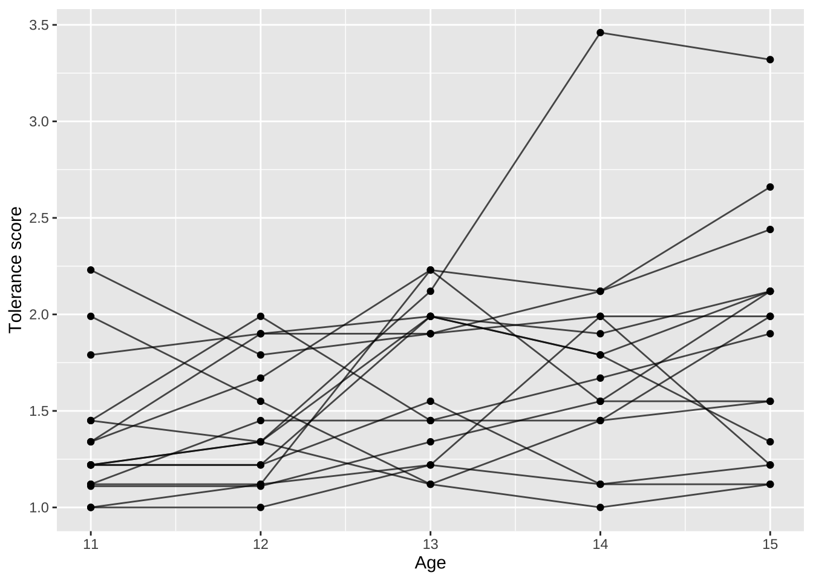
이제 남녀별로 관용도 점수의 변화를 보고 비교해 보자. 선그래프를 보면 1명의 학생(남자)을 제외하면 남녀별로 큰 차이를 보이지 않는다.
ggplot(df1,
aes(x = age, y = tolerance, group = id)) +
geom_line(alpha = 0.7) +
geom_point(size = 1.5) +
facet_wrap(
~ male
) +
scale_x_continuous(breaks = 11:15) +
labs(x = "Age", y = "Tolerance score")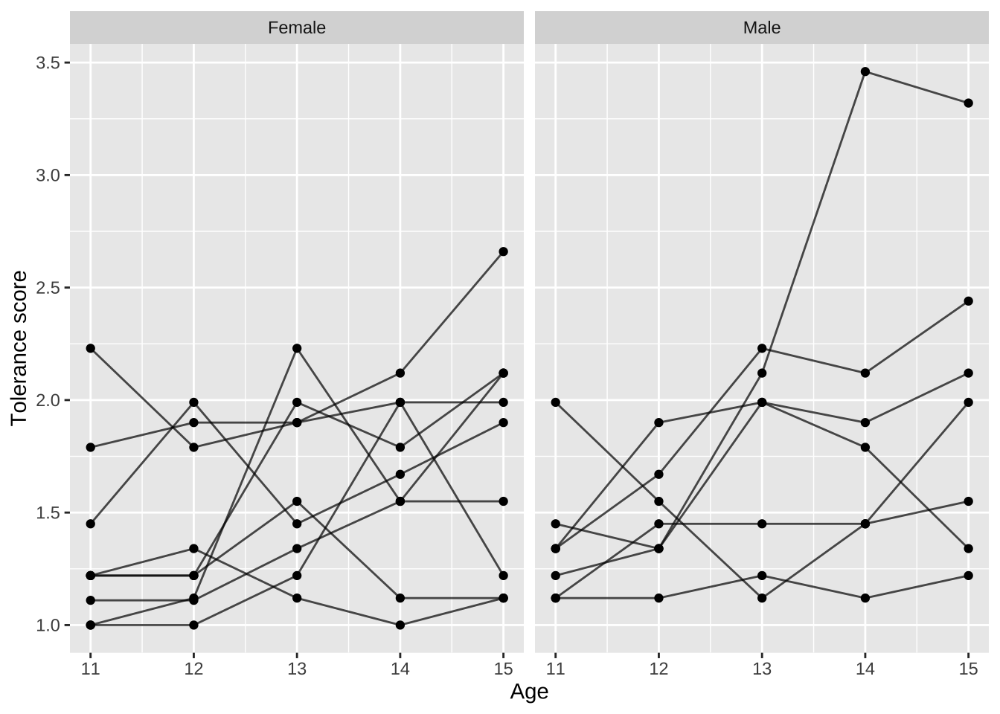
이제 노출 수준(exposure)의 수준과 관용도 점수의 관계를 비교해보자. 먼저 노출수준 점수의 중앙값을 기준으로 높으면 노출이 높은 그룹(High exposure), 낮으면 낮은 그룹(Low exposure)으로 구별하여 두 그룹간의 차이를 비교하려고 한다.
아래 그림을 보면 노출이 높은 그룹일수록 관용도가 높아지는 경향이 있는듯 보이며 이는 노출의 수준에 따라서 관용도의 변화 양상도 다를 수 있음을 직관적으로 보여주고 있다.
df2 <- df1 |>
mutate(
hiexp = if_else(
exposure > median(exposure),
"High exposure",
"Low exposure"
)
)
ggplot(df2,
aes(x = age, y = tolerance, group = id)) +
geom_line(alpha = 0.7) +
geom_point(size = 1.5) +
facet_wrap(~ hiexp) +
scale_x_continuous(breaks = 11:15) +
labs(x = "Age", y = "Tolerance score")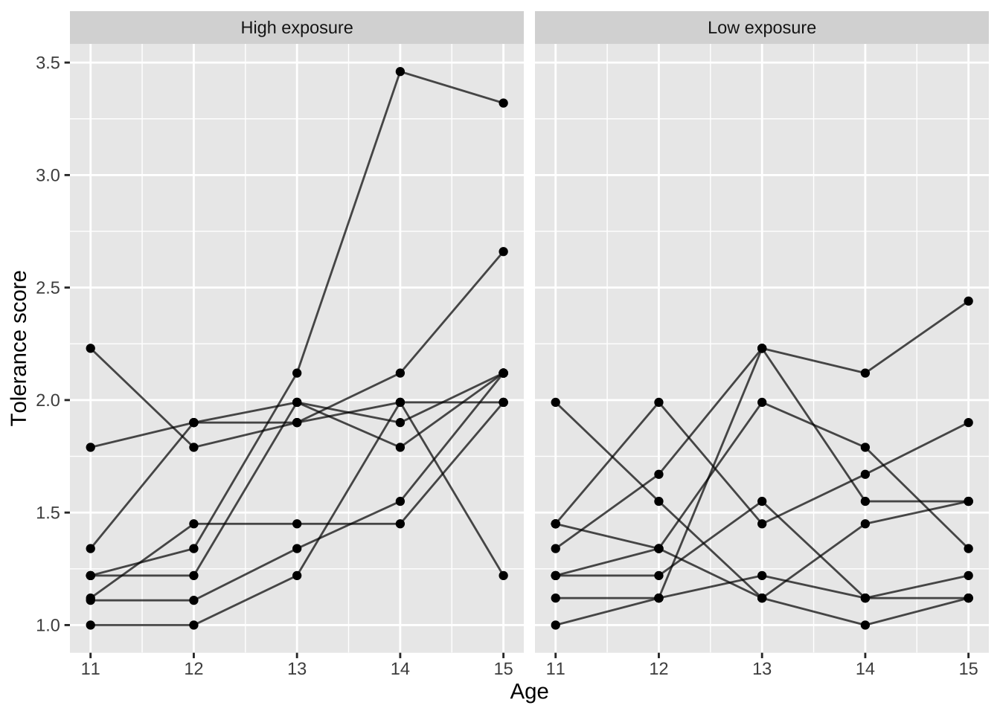
10.5.1.5 개체별 선형 회귀모형
각 개인에 대하여 다음과 같은 단순 선형 회귀모형을 적합해보자.
\[ \text{Tolerance}_{ij} = \beta_{0i} + \beta_{1i} \cdot \text{Age}_{ij} + e_{ij}, \quad i = 1, \cdots, I, ~ j = 1, \cdots, J \]
여기서 단순 선형 회귀모형의 계수에 대한 의미는 다음과 같다.
- \(\beta_{0i}\): 개인 \(i\)의 관용도에 대한 초기 수준(initial status)
- \(\beta_{1i}\): 개인 \(i\)의 관용도에 대한 평균 변화율(rate of change)
각 학생의 관용도 점수에 대하여 개인별로 선형 회귀모형을 적합하기 전에, 먼저 각 개인별로 산점도와 회귀선을 그려보면 다음과 같다.
ggplot(df2, aes(x = age, y = tolerance)) +
geom_point(size = 0.5) +
geom_smooth(method = lm, se = FALSE, linewidth = 0.5) +
facet_wrap("id", labeller = label_both) +
theme_bw()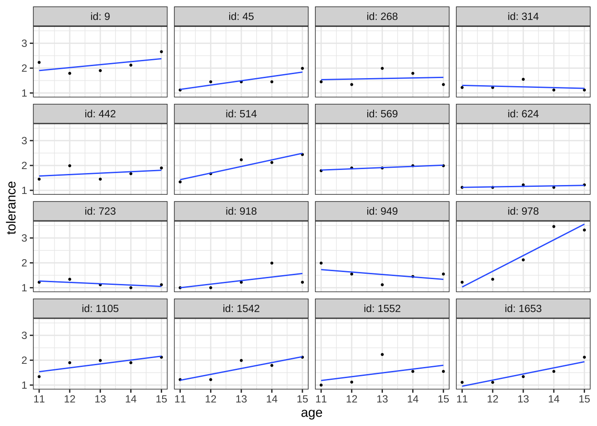
이제 개인별로 선형 회귀모형을 적합하고, 개인별 절편과 기울기 추정치를 살펴보자. 앞의 sleepstudy 예제에서 사용한 lmList 함수를 사용할 수도 있지만 다음과 같은 코드를 이용하여 회귀계수의 추정량과 결정계수도 같이 구할 수 있다. 13명의 학생들은 관용도 점수의 시간에 따른 변화가 증가하며(양의 회귀계수) 나머지 3명은 음의 계수를 보여서 감소하는 것으로 나타난다.
indiv_lm <- df2 |>
group_by(id) |>
group_modify(~ {
fit <- lm(tolerance ~ age, data = .x)
tibble(
intercept = coef(fit)[1],
slope = coef(fit)[2],
sigma2 = sigma(fit)^2,
r2 = summary(fit)$r.squared
)
}) |>
ungroup()
indiv_lm# A tibble: 16 × 5
id intercept slope sigma2 r2
<fct> <dbl> <dbl> <dbl> <dbl>
1 9 0.593 0.119 0.106 0.309
2 45 -0.770 0.174 0.0296 0.773
3 268 1.28 0.0230 0.113 0.0154
4 314 1.64 -0.0300 0.0388 0.0717
5 442 0.938 0.0580 0.0720 0.135
6 514 -1.49 0.265 0.0317 0.881
7 569 1.28 0.0490 0.00110 0.879
8 624 0.900 0.0200 0.00267 0.333
9 723 1.86 -0.0540 0.0119 0.450
10 918 -0.573 0.143 0.154 0.306
11 949 2.81 -0.0980 0.0969 0.248
12 978 -5.92 0.632 0.171 0.886
13 1105 -0.178 0.156 0.0381 0.681
14 1542 -1.41 0.237 0.0542 0.776
15 1552 -0.499 0.153 0.233 0.251
16 1653 -1.75 0.246 0.0323 0.862 다음은 학생별로 구한 절편과 기울기의 기초 요약 통계 및 상관계수이다. 특별하게 학생별로 구한 절편과 기울기가 강한 음의 상관계수를 가지며 이는 초기 관용도 점수와 변화 패턴이 반대로 나타난다는 강력한 증거이다. 즉, 초기 관용도 점수가 낮으면 관용도가 시간에 따라서 상대적으로 빠르게 변하고, 반대로 초기 초기 관용도 점수가 높으면 관용도가 시간에 따라서 상대적으로 느리게 변한다는 의미이다.
summary(indiv_lm$intercept) Min. 1st Qu. Median Mean 3rd Qu. Max.
-5.92400 -0.93075 0.20750 -0.08119 1.27850 2.80600 summary(indiv_lm$slope) Min. 1st Qu. Median Mean 3rd Qu. Max.
-0.09800 0.02225 0.13100 0.13081 0.18975 0.63200 cor(indiv_lm$intercept, indiv_lm$slope)[1] -0.9915001위의 결과를 절편과 기울기에 대한 산점도를 이용하여 확인할 수 있다.
ggplot(indiv_lm, aes(x = intercept, y = slope)) +
geom_point(size = 2) +
geom_smooth(method = "lm", se = FALSE) +
labs(x = "OLS initial status (intercept)",
y = "OLS rate of change (slope)")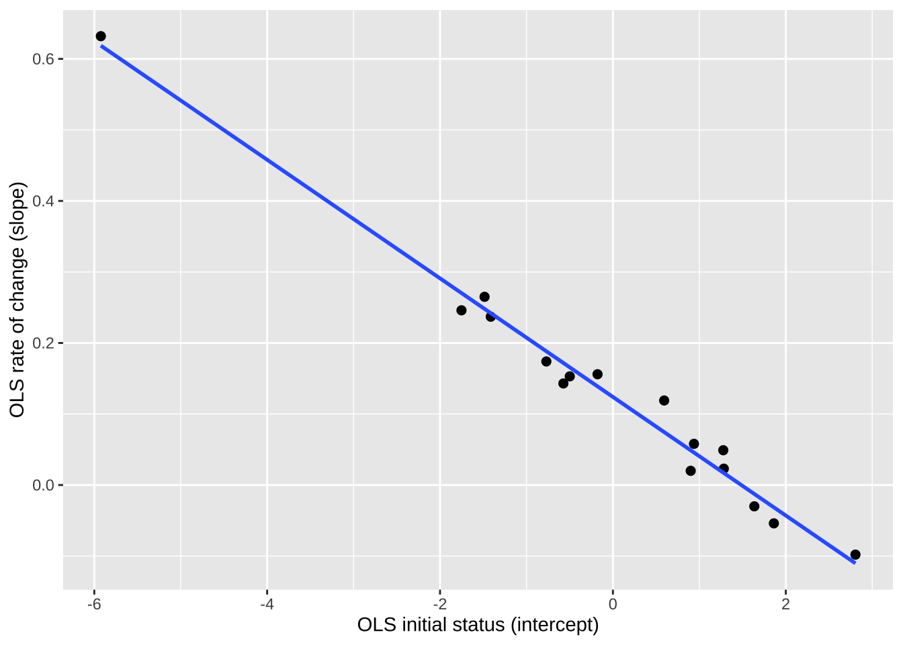
10.5.1.6 임의계수 모형
이제 각 학생에 대한 절편과 기울기에 대한 효과를 임의효과로 표현하는 임의계수 모형으로 나타내보자.
먼저 11세를 기준으로 중심화(centering)하여, 절편이 “11세에서의 기대 관용도”가 되게 변환한다.
df3 <- df2 |>
mutate(age_c = age - 11)
head(df3)# A tibble: 6 × 7
id age tolerance male exposure hiexp age_c
<fct> <dbl> <dbl> <fct> <dbl> <chr> <dbl>
1 9 11 2.23 Female 1.54 High exposure 0
2 9 12 1.79 Female 1.54 High exposure 1
3 9 13 1.9 Female 1.54 High exposure 2
4 9 14 2.12 Female 1.54 High exposure 3
5 9 15 2.66 Female 1.54 High exposure 4
6 45 11 1.12 Male 1.16 High exposure 0이제 다음과 같은 임의계수 모형을 고려하고 lmer 함수를 이용하여 적합해보자.
\[ \text{Tolerance}_{ij} = (\beta_0 + b_{0i}) + (\beta_1 + b_{1i}) ~~\text{age}_{ij} + e_{ij} \tag{10.18}\]
m1 <- lmer(tolerance ~ age_c + (age_c | id),
data = df3,
REML = TRUE)
summary(m1)Linear mixed model fit by REML. t-tests use Satterthwaite's method [
lmerModLmerTest]
Formula: tolerance ~ age_c + (age_c | id)
Data: df3
REML criterion at convergence: 72.1
Scaled residuals:
Min 1Q Median 3Q Max
-1.5627 -0.5075 -0.2229 0.2722 2.5979
Random effects:
Groups Name Variance Std.Dev. Corr
id (Intercept) 0.04421 0.2103
age_c 0.02227 0.1492 -0.26
Residual 0.07412 0.2722
Number of obs: 80, groups: id, 16
Fixed effects:
Estimate Std. Error df t value Pr(>|t|)
(Intercept) 1.35775 0.07445 14.99961 18.238 1.2e-11 ***
age_c 0.13081 0.04307 14.99993 3.037 0.00832 **
---
Signif. codes: 0 '***' 0.001 '**' 0.01 '*' 0.05 '.' 0.1 ' ' 1
Correlation of Fixed Effects:
(Intr)
age_c -0.448이제 위의 적합한 결과를 다음과 같이 요약할 수 있다.
- 고정효과
(Intercept)는 11세에서의 전체 평균 관용도이며 추정값은 \(\hat \beta_0 =\)1.35775. - 고정효과
age_c: 1년 증가할 때 평균적으로 관용도점수가 얼마나 변하는지 나타내는 변화율이며 추정값은 \(\hat \beta_1 =\)0.13081.
따라서 일탈행동에 대한 관용도는 전체적으로 증가한다.
임의 효과 분산/공분산은 개인별 초기 수준의 변동과 변화율의 변동을 나타낸다.
10.5.1.7 설명변수 효과
이제 임의효과 모형에서 성별과 노출의 효과를 포함시켜서 남여별로 차이가 있는지 그리고 노츨의 정도에 따라서 어떤 차이가 있는지 살펴보자.
위의 모형 식 10.18 에 다음과 같이 성별과 노플에 대한 고정 효과를 포함시켜 보자.
\[ \text{Tolerance}_{ij} = \text{Sex}_k + + (\beta_0 + b_{0i}) + (\beta_1 + b_{1i}) ~~\text{age}_{ij} + \beta_2 ~\text{Exposure} + e_{ij} \tag{10.19}\]
모형식 식 10.19 를 lmer 함수를 이용하여 적합해 보자.
m2 <- lmer(tolerance ~ male + exposure + age_c + (age_c | id),
data = df3,
REML = TRUE)
summary(m2)Linear mixed model fit by REML. t-tests use Satterthwaite's method [
lmerModLmerTest]
Formula: tolerance ~ male + exposure + age_c + (age_c | id)
Data: df3
REML criterion at convergence: 69.3
Scaled residuals:
Min 1Q Median 3Q Max
-1.5974 -0.5444 -0.1357 0.2027 2.7354
Random effects:
Groups Name Variance Std.Dev. Corr
id (Intercept) 0.06108 0.2471
age_c 0.02227 0.1492 -0.69
Residual 0.07412 0.2722
Number of obs: 80, groups: id, 16
Fixed effects:
Estimate Std. Error df t value Pr(>|t|)
(Intercept) 0.59896 0.24482 14.45279 2.447 0.02776 *
maleMale 0.16623 0.11606 12.99997 1.432 0.17568
exposure 0.57592 0.18090 12.99997 3.184 0.00719 **
age_c 0.13081 0.04307 14.99993 3.037 0.00832 **
---
Signif. codes: 0 '***' 0.001 '**' 0.01 '*' 0.05 '.' 0.1 ' ' 1
Correlation of Fixed Effects:
(Intr) maleMl exposr
maleMale -0.381
exposure -0.921 0.197
age_c -0.239 0.000 0.000위의 적합 결과를 다음과 같이 요약할 수 있다.
고정효과
male: 남학생이 여학생에 비하여 평균적으로 약0.16623만큼 관용도가 높지만 통계적으로 유의하지는 않다.고정효과
exposure: 노출 정도가 1단위 증가할 때 평균적으로 약0.57592만큼 관용도가 높아진다.즉, 일탈 친구에 대한 노출 정도가 높을수록 관용도가 높아지는 경향이 있으며 통계적으로 유의하다.
10.5.1.8 축소현상의 시각화
이제 임의계수 모형에서 추정한 개인별 절편과 기울기를 개체별 선형회귀 모형에서의 추정치와 비교해 볼 수 있다. 아래 그림은 sleepstudy 와 유사하게 임의계수 모형에서 추정한 개인별 절편과 기울기가 개별 회귀모형에 비하여 전체 평균으로 축소되는 경향을 나타낸 그림이다.
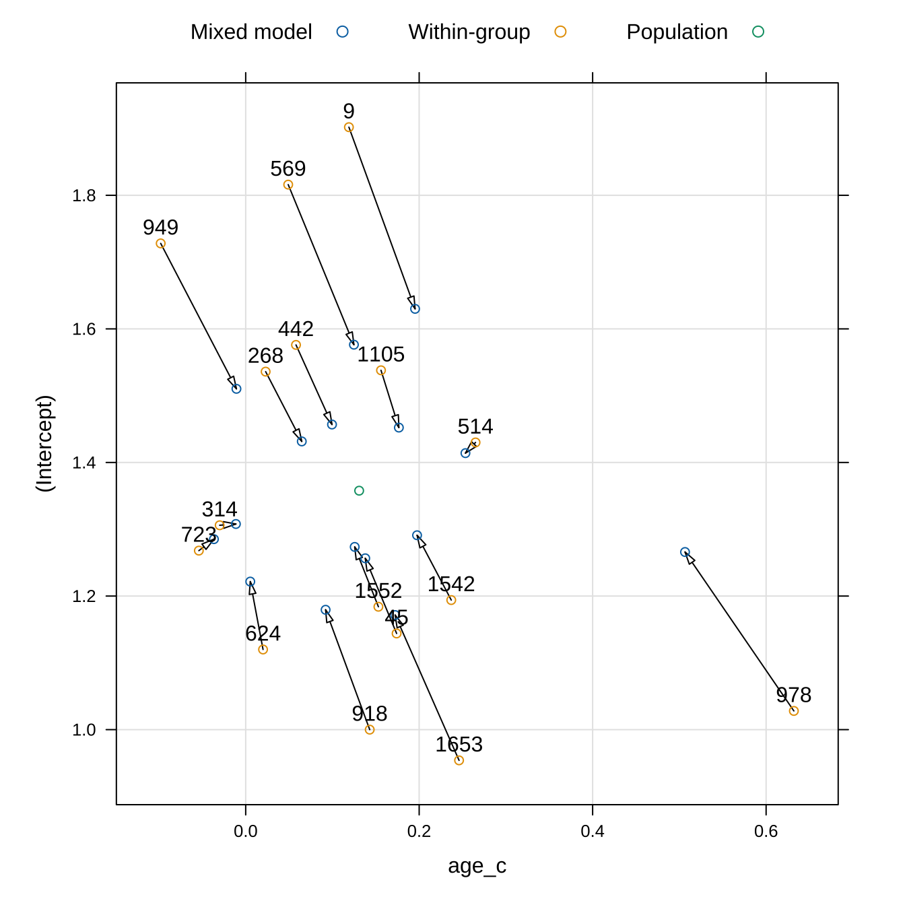